<!doctype html>
<html lang="en">
<head>
  <meta charset="utf-8">
  <meta name="viewport" content="width=device-width, initial-scale=1">
  <title>arxiv digest — 2026-06-08</title>
  <style>
:root {
  --bg: #ffffff;
  --fg: #1f2328;
  --muted: #59636e;
  --border: #d0d7de;
  --card: #f6f8fa;
  --link: #0969da;
}
body {
  max-width: 980px;
  margin: 0 auto;
  padding: 2rem 1rem 5rem;
  font-family: -apple-system, BlinkMacSystemFont, "Segoe UI", Helvetica, Arial, sans-serif;
  line-height: 1.55;
  color: var(--fg);
  background: var(--bg);
}
a { color: var(--link); }
img { max-width: 100%; height: auto; }
pre, code { background: var(--card); border-radius: 6px; }
pre { padding: 1rem; overflow-x: auto; }
blockquote { border-left: 4px solid var(--border); padding-left: 1rem; color: var(--muted); }
details { margin: 0.6rem 0; }
summary { cursor: pointer; font-weight: 600; }
.paper-figures-scroll {
  display: flex;
  gap: 1rem;
  overflow-x: auto;
  overscroll-behavior-x: contain;
  padding: 0.75rem 0.25rem 1rem;
  margin: 1rem 0 1.25rem;
  border-top: 1px solid var(--border);
  border-bottom: 1px solid var(--border);
  scroll-snap-type: x proximity;
}
.paper-figure-card {
  flex: 0 0 min(260px, 72vw);
  scroll-snap-align: start;
  background: var(--card);
  border: 1px solid var(--border);
  border-radius: 12px;
  padding: 0.55rem;
}
.paper-figure-card img {
  display: block;
  width: 100%;
  max-height: 240px;
  object-fit: contain;
  background: white;
  border-radius: 8px;
}
.paper-figure-caption {
  display: block;
  margin-top: 0.5rem;
  color: var(--muted);
  font-size: 0.85rem;
}
.figure-strip-hint {
  color: var(--muted);
  font-size: 0.9rem;
  margin-bottom: -0.3rem;
}
</style>
  <!-- MathJax: renders $...$ inline math and $$...$$ display math, plus
       \(...\) and \[...\]. Loaded from the official CDN; works offline
       once cached. Configured to skip code/pre blocks so arxiv IDs that
       look like dollar amounts don't get mangled. -->
  <script>
    window.MathJax = {
      tex: {
        inlineMath: [['$', '$'], ['\\(', '\\)']],
        displayMath: [['$$', '$$'], ['\\[', '\\]']],
        processEscapes: true,
        processEnvironments: true
      },
      options: {
        skipHtmlTags: ['script', 'noscript', 'style', 'textarea', 'pre', 'code'],
        ignoreHtmlClass: 'tex2jax_ignore',
        processHtmlClass: 'tex2jax_process'
      }
    };
  </script>
  <script id="MathJax-script" async
    src="https://cdn.jsdelivr.net/npm/mathjax@3/es5/tex-chtml.js"></script>
</head>
<body>
<header style="background-color: #333; color: white; padding: 15px; margin-bottom: 20px;">
  <h1 style="margin: 0; font-size: 24px;">
    <a href="https://ochelpan.github.io/arXiv_clean/" style="color: white; text-decoration: none;">Main</a>
  </h1>
</header>

<h1>Daily arXiv Report</h1>

<hr>
<p>
<a href="index.html">← Index</a>
 · <a href="papers_02.html">Next →</a>
</p>
<hr>

<h2>Papers 1–20</h2>
<p><a id="paper-2606.06605"></a></p>
<h3 id="tensor-network-study-of-deconfined-quantum-criticality-in-a-one-dimensional-spin-phonon-model">⭐ <a href="http://arxiv.org/abs/2606.06605v1">Tensor network study of deconfined quantum criticality in a one-dimensional spin-phonon model</a></h3>
<p><strong>Highlighted author(s):</strong> Johannes Knolle<br>
<strong>Authors:</strong> Anton Romen, Josef Willsher, David Hofmeier, Johannes Knolle, Michael Knap<br>
<strong>Type:</strong> theory · <strong>Category:</strong> strongly correlated electrons · <strong>PDF:</strong> <a href="https://arxiv.org/pdf/2606.06605v1">https://arxiv.org/pdf/2606.06605v1</a><br>
<strong>Analysis basis:</strong> full PDF text, analyzed in chunks
<strong>Topic relevance:</strong> <code>methods for driven-dissipative</code> <strong>3/5</strong> · <code>analog quantum simulation</code> <strong>2/5</strong> · <code>driven-dissipative phase transition</code> <strong>2/5</strong> · <code>Frenkel-Kontorova</code> <strong>1/5</strong> · <code>entanglement &amp; information structure</code> <strong>1/5</strong> · <code>exotic spin models in light-matter</code> <strong>1/5</strong> · <code>non-equilibrium dynamics</code> <strong>1/5</strong> · <code>non-equilibrium universality</code> <strong>1/5</strong> · <code>spintronics-quantum-optics interface</code> <strong>1/5</strong></p>
<div class="figure-strip-hint">↔ Scroll figures horizontally</div>
<div class="paper-figures-scroll">
<figure class="paper-figure-card">
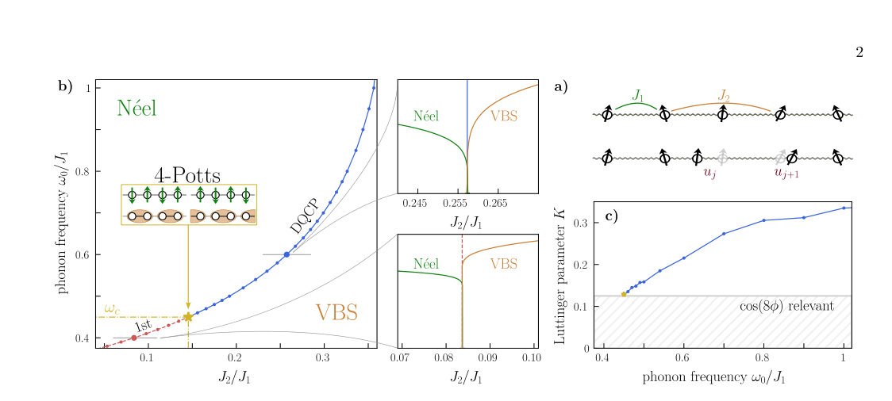
<figcaption class="paper-figure-caption"><b>Fig 1.</b> FIG. 1. Phase Diagram of a frustrated 1D spin-chain coupled to quantum phonons: a) We consider a 1D spin chain with antiferromagnetic nearest and next-nearest neighbor interactions and strong spin anisotropy ∆= 4. Spins are coupled to lattice distortions, modeled by site phonons with displacement uj at a single variable frequency ω0. b) Above the critical frequency ωc, the spin-phonon model realizes a line of deconfined quantum critical points with varying critical exponents between an Ising-N´eel ordered phase and a dimerized valence bond solid. The critical line ends at ωc, marked by an endpoint in the four-state Potts universality class. Below ωc the transition turns strongly...</figcaption>
</figure>
<figure class="paper-figure-card">
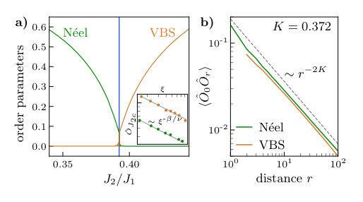
<figcaption class="paper-figure-caption"><b>Fig 2.</b> FIG. 2. Summary of Deconfined Criticality in a 1D spin chain: a) Upon tuning J2/J1, the model undergoes a continuous transition from a gapped phase with N´eel or- der to a dimerized VBS phase. Numerical data displays a weakly first-order transition with length scale set by the MPS correlation length ξ. Upon increasing the bond dimen- sion χ, order parameter residuals at the transition vanish as ˆOJ2c ∼ξ(χ)−β/ν ∼ξ−K (inset), indicating a continuous tran- sition in the thermodynamic limit, see main text for details. b) Order parameter correlations at the transitions decay al- gebraically, with exponent set by the Luttinger parameter K of the critical theory.</figcaption>
</figure>
<figure class="paper-figure-card">
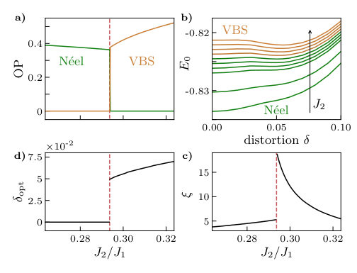
<figcaption class="paper-figure-caption"><b>Fig 3.</b> FIG. 3. Spin-Peierls Instability of DQC in a 1D spin chain: a) Static lattice distortions drive the DQCP to a strong first-order transition, displayed by a clear jump in the order parameter. b) Inside the VBS phase, the system favours a sudden distortion of the underlying lattice δ ̸= 0 to lower the ground state energy. c) The lattice instability is captured by a sudden jump of the optimal lattice distortion δopt at the transition. d) The correlation length displays clear first-order character.</figcaption>
</figure>
<figure class="paper-figure-card">
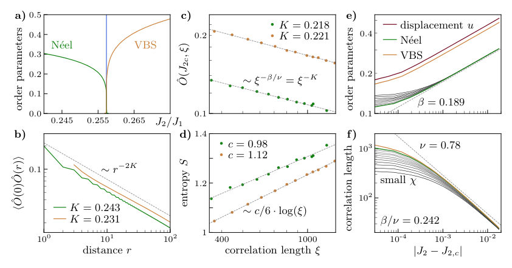
<figcaption class="paper-figure-caption"><b>Fig 4.</b> FIG. 4. DQCP in the spin-phonon model: a) When coupling to dynamical Einstein phonons with frequency ω0, the con- tinuous transition between N´eel and VBS phase persists above a critical phonon frequency ωc. b) Order parameter correlations at the transition decay algebraically, with power law exponent −2K governed by the Luttinger parameter of the critical theory. c) The order parameters develop a finite residual at the critical point, which vanishes with increasing correlation length ξ of the MPS ground state. The residuals are controlled using a sweep protocol initialized in one of the two ordered phases. Finite-size scaling predicts a power-law decay ˆOJ2c ∼ξ−β/ν = ξ−K, which we use to...</figcaption>
</figure>
<figure class="paper-figure-card">
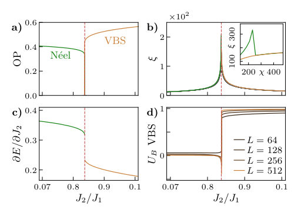
<figcaption class="paper-figure-caption"><b>Fig 5.</b> FIG. 5. Strong first-order transition in the spin- phonon model: Below a critical phonon frequency ωc, the transition between N´eel and VBS phase turns strongly first order. a) This is indicated by a clear jump in the order pa- rameters, b) rapid saturation of the correlation length, and c) a discontinuity in the energy derivative at the transition. d) Further evidence for a strong-first order transition is ob- tained from the VBS Binder Cumulant UB, which develops a diverging negative cusp with increasing system size. This behavior arises from a multi-peak distribution of the order pa- rameter in the presence of phase coexistence. Data obtained for ∆1 = ∆2 = 4, g = 0.25J1, ω0 = 0.4J1.</figcaption>
</figure>
</div>

<p><strong>Summary.</strong> The paper uses tensor network simulations to study DQCP in a 1D spin-phonon model. It finds that while the critical point exists at high phonon frequencies, coupling to lattice vibrations drives the transition into a strongly first-order regime below a critical frequency. This work provides quantitative signatures like spectral function anomalies for experimental detection.</p>
<p><strong>Why it may be interesting.</strong> This work provides a concrete example of how lattice degrees of freedom can fundamentally alter the nature of quantum phase transitions predicted by purely electronic models, which is crucial for understanding real materials.</p>
<details>
<summary>Detailed structure</summary>
<p><strong>Main problem.</strong> The study investigates how lattice vibrations (phonons) affect Deconfined Quantum Critical Points (DQCPs) in one-dimensional spin systems, determining if the transition remains continuous or becomes first-order.</p>
<p><strong>Main result.</strong> The DQCP persists for high phonon frequencies but turns strongly first-order below a critical frequency ($\omega_c$), leading to an effective description by the double sine-Gordon model.</p>
<p><strong>Method.</strong> Tensor network simulations (iDMRG/MPS) and bosonization techniques are employed across various limits, including static and dynamical spin-phonon coupling.</p>
<p><strong>Model / system.</strong> The system is a 1D antiferromagnetic $J_1-J_2$ spin chain coupled to lattice vibrations via a spin-phonon interaction term ($H_{sp}$). The low-energy physics is mapped onto the double sine-Gordon model.</p>
<p><strong>Key observables.</strong> Luttinger parameter (K), order parameters (Néel/VBS), phonon spectral function $A(q, \omega)$, and Binder cumulant ($U_B$).</p>
<p><strong>Important parameters / regimes.</strong> Phonon frequency ($\omega_0$), critical frequency ($\omega_c$), coupling constants ($J_1, J_2$), and the effective coupling strength $
ho$.</p>
<p><strong>Assumptions / limitations.</strong> The analysis relies on mapping to continuum theories (sine-Gordon) and using tensor network methods with finite bond dimensions ($\chi$) for numerical calculations.</p>
<p><strong>Figures summary.</strong> Figures illustrate the phase diagram showing DQCP above $\omega_c$ terminating at a Potts endpoint, and demonstrating the transition changing from continuous (power-law decay) to strongly first-order (discontinuous jumps in order parameters).</p>
<p><strong>Paper structure.</strong> The paper systematically analyzes the spin model via bosonization, then incorporates phonon coupling by examining static ($\omega_0 	o 0$) vs. dynamical ($\omega_0 > 0$) limits, culminating in quantitative measurements of critical exponents and spectral functions.</p>
</details>
<details>
<summary>Abstract</summary>
<p>Deconfined quantum critical points (DQCPs) describe continuous transitions between ordered phases beyond the Landau paradigm. A simple example is the Néel antiferromagnet (AFM) to valence bond solid (VBS) transition in a 1D antiferromagnetic $J_1-J_2$ model. In analogy to the spin-Peierls instability of critical spin chains, DQCPs are predicted to be unstable towards lattice distortions below a critical phonon frequency. In this work, we use tensor network simulations to investigate this instability in the antiferromagnetic $J_1-J_2$ model coupled to lattice vibrations. We confirm the stability of DQCP for large phonon frequencies and demonstrate that the transition turns strongly first-order below a critical frequency. The instability is caused by a reduction of the Luttinger parameter due to spin-phonon interactions and we identify the effective theory of the behavior as the double sine-Gordon model. The same effective theory is known to describe the classical Ashkin-Teller model, which enables us to show that the critical endpoint is in the four-state Potts universality class. Furthermore, we provide quantitative numerical scaling results for the phonon spectral function, offering an experimental signature to probe DQCP-phonon coupling in low-dimensional materials.</p>
</details>
<p><sub><a href="#top">↑ back to top</a></sub></p>

<p><a id="paper-2606.07509"></a></p>
<h3 id="bulk-superconductivity-driven-by-disorder-induced-delocalization-in-4hb-tasmath21mathsemath22mathmath23math">⭐ <a href="http://arxiv.org/abs/2606.07509v1">Bulk Superconductivity driven by Disorder-Induced Delocalization in 4Hb-Ta(S$_{1-x}$Se$_x$)$_2$</a></h3>
<p><strong>Highlighted author(s):</strong> Ehud Altman<br>
<strong>Authors:</strong> Lu Chen, Sae-Hee Ryu, Avior Almoalem, Yuanqi Lyu, Koh Yamakawa, Luke Pritchard Cairns, Ryan Day, Ehud Altman, Daniel Podolsky, Dung-Hai Lee, 4 Vidya Madhavan, Eli Rotenberg, James G. Analytis<br>
<strong>Type:</strong> both · <strong>Category:</strong> strongly correlated electrons · <strong>PDF:</strong> <a href="https://arxiv.org/pdf/2606.07509v1">https://arxiv.org/pdf/2606.07509v1</a><br>
<strong>Analysis basis:</strong> full PDF text, analyzed in chunks
<strong>Topic relevance:</strong> <code>driven-dissipative phase transition</code> <strong>2/5</strong> · <code>Keldysh / 2PI / non-Gaussian methods</code> <strong>1/5</strong> · <code>Kondo &amp; dissipative impurity</code> <strong>1/5</strong> · <code>analog quantum simulation</code> <strong>1/5</strong> · <code>methods for driven-dissipative</code> <strong>1/5</strong> · <code>non-equilibrium dynamics</code> <strong>1/5</strong></p>
<div class="figure-strip-hint">↔ Scroll figures horizontally</div>
<div class="paper-figures-scroll">
<figure class="paper-figure-card">
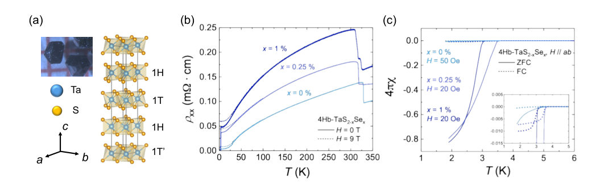
<figcaption class="paper-figure-caption"><b>Fig 1.</b> Figure 1. Sensitivity of superconductivity to Se substitution. (a) Crystal structure of 4Hb-Ta(S1−xSex)2. 1T- TaS2−xSex and 1H-TaS2−xSex layers stack along the crystal c axis with van der Waals coupling between the layers. Single crystals of 4Hb-Ta(S1−xSex)2 are also shown. (b) Temperature dependence of the in-plane electrical resistivity ρxx(T) for 4Hb-Ta(S1−xSex)2 single crystals with three different Se concentrations at magnetic fields of H = 0 T (solid line) and H = 9 T (short dashed line). Only the x = 0% sample shows a kink in resistivity around T ∼30 K due to the appearance of a 3 × 3 commensurate charge density wave (CCDW) in the 1H layer. This low-temperature CCDW transition is...</figcaption>
</figure>
<figure class="paper-figure-card">
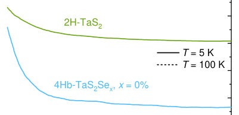
<figcaption class="paper-figure-caption"><b>Fig 2.</b> Figure 2. Evidence for delocalization transition in 4Hb- Ta(S1−xSex)2 as a function of Se substitution. Hall co- efficient RH in the high field limit at low temperature (5 K, solid lines) and high temperature (100 K, dashed lines) mea- sured in 2H-TaS2 (green curves) and 4Hb-Ta(S1−xSex)2 sam- ples at x = 0% (light blue curves) and 1% (dark blue curves). At all temperatures the 4Hb-Ta(S1−xSex)2 x = 0% sample has roughly half the carriers of 2H-TaS2, consistent with all the carriers in the 1T layers being localized. At low tem- peratures the 4Hb-Ta(S1−xSex)2 at x = 1% sees a dramatic change where the Hall coefficient not only changes sign, but asymptotes to small value of RH, suggesting a...</figcaption>
</figure>
<figure class="paper-figure-card">
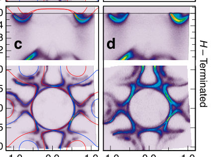
<figcaption class="paper-figure-caption"><b>Fig 3.</b> Figure 3. ARPES evidence for a delocalization transi- tion in 4Hb-Ta(S1−xSex)2. Slices of the full ARPES Bind- ing Energy (BE) vs. k data set for (a,b) 1T-terminated and (c,d) 1H-terminated regions of the sample surface. The up- per part of each panel is a bandstructure slice (BE vs. kx at ky = 0, while the lower part is the intensity distribution at EF along kx and ky. The ARPES data shows the same dramatic effect as the electrical Hall effect: there is a filling of the CDW gap in the 1H layers (red circles) while in the 1T layer a metallic Fermi surface appears near Γ with 1% Se substitution. The data are collected at photon energy 72 eV, and all panels use the same color scale linearly...</figcaption>
</figure>
<figure class="paper-figure-card">
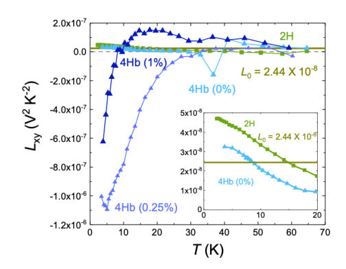
<figcaption class="paper-figure-caption"><b>Fig 4.</b> Figure 4. Lorenz number from the thermal Hall con- ductivity in 4Hb-Ta(S1−xSex)2. Calculated Lorenz num- ber Lxy = κxy/(Tσxy) in 2H-TaS2, 4Hb-Ta(S1−xSex)2 x = 0%, x = 0.25%, and 1% samples in a magnetic field of H = 9 T. The Wiedemann-Franz law is mostly fulfilled in 2H-TaS2 and pristine 4Hb-Ta(S1−xSex)2(as shown in the in- set panel), while it is strongly violated in the Se substituted 4Hb-Ta(S1−xSex)2 samples.</figcaption>
</figure>
<figure class="paper-figure-card">
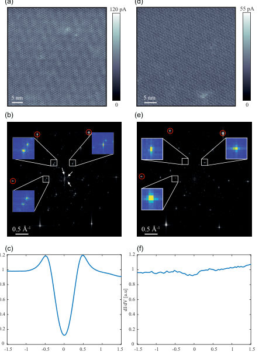
<figcaption class="paper-figure-caption"><b>Fig 5.</b> Figure 5. Correlation between the SC-gap and CDW domains in pristine 4Hb-TaS2. (a) Atomically resolved topography of the 1H layer (V = −5mV, I = 70mV). (b) Fast Fourier transform (FFT) of the topography in (a), with white arrows indicating central moir´e peaks. (c) Averaged tunneling spectrum acquired on the surface shown in (a), displaying a well-defined superconducting gap (Vset = -1.5 mV, I = 70 pA, Vmodulation = 30 µeV). (d, e) Topography and corresponding FFT at a different location showing unsplit CDW peaks. (f) Averaged spectrum in the region shown in (d), indicating a highly suppressed gap (Vset = -2 mV, I = 100 pA, Vmodulation = 40 µeV). Spectra in (c) and (f) were taken with the...</figcaption>
</figure>
</div>

<p><strong>Summary.</strong> This paper demonstrates that introducing controlled disorder via Se substitution into the superconductor $4	ext{Hb-Ta}(	ext{S}_{1-x}	ext{Se}_x)_2$ is necessary to induce bulk superconductivity. The mechanism proposed is a disorder-driven delocalization of carriers within a Mott-like layer, which fundamentally alters the electronic band structure and stabilizes the superconducting state.</p>
<p><strong>Why it may be interesting.</strong> The work provides a detailed experimental roadmap for linking structural disorder directly to the emergence of unconventional electronic phases in strongly correlated materials, which is highly relevant for understanding emergent quantum phenomena.</p>
<details>
<summary>Detailed structure</summary>
<p><strong>Main problem.</strong> The study investigates the primary mechanism driving unconventional superconductivity in $4	ext{Hb-Ta}(	ext{S}_{1-x}	ext{Se}_x)_2$, specifically determining if disorder-induced carrier delocalization is responsible.</p>
<p><strong>Main result.</strong> Bulk superconductivity emerges only when Se doping introduces quenched disorder, suggesting that the fragility of the Mott state and subsequent carrier delocalization in the T-layer are key drivers for pairing.</p>
<p><strong>Method.</strong> The research combines multiple experimental techniques including ARPES, STM, transport measurements ($
ho_{xx}, \kappa$), and theoretical modeling (Tight-Binding) to probe electronic structure changes across doping levels.</p>
<p><strong>Model / system.</strong> The system is the layered superconductor $4	ext{Hb-Ta}(	ext{S}_{1-x}	ext{Se}_x)_2$, which features interleaved Mott-like ($1T$) and metallic ($1H$) layers. The physics centers on charge transfer, flat band behavior, and correlation effects.</p>
<p><strong>Key observables.</strong> Superconducting Volume Fraction (SCVF), Hall coefficient $R_H(H)$, ARPES spectral weight/band structure changes, Thermal Conductivity ($\kappa_{xx}, \kappa_{xy}$), and Lorenz number ($L$).</p>
<p><strong>Important parameters / regimes.</strong> Se concentration ($x$), temperature ($T$), magnetic field ($H$), and the ratio of Coulomb repulsion to bandwidth ($U/W$) related to Mott physics.</p>
<p><strong>Assumptions / limitations.</strong> The analysis assumes that Se substitution primarily acts by introducing local disorder, which drives electronic transitions rather than solely controlling carrier density via charge transfer alone.</p>
<p><strong>Figures summary.</strong> Figures show ARPES evidence of new metallic states upon doping; STM correlates SC gaps with CDW domain structure; transport measurements track the suppression of thermal and electrical properties as Se is added.</p>
<p><strong>Paper structure.</strong> The paper systematically analyzes how Se substitution modifies electronic structure (ARPES/XPS) leading to a delocalization transition, which is then correlated across multiple diagnostics: superconductivity onset (SCVF), charge transport ($
ho_{xy}(H)$), and heat transport ($\kappa$, $L$).</p>
</details>
<details>
<summary>Abstract</summary>
<p>The unconventional superconductor 4Hb-TaS$_2$ is a natural heterostructure that can be broadly understood as interleaving Mott-like and metallic layers. We study the properties of this material as a function of quenched disorder in the form of Se/S substitution and find that while disordered samples show bulk superconductivity, clean samples do not. We show that a disorder-driven delocalization of carriers in the Mott-like ($1T$-) layer forms a new Fermi surface that is absent in the cleanest samples. This suggests that one of the primary drivers for superconductivity is the fragility of the Mott state, whose delocalization brings to life a sea of strongly correlated electrons.</p>
</details>
<p><sub><a href="#top">↑ back to top</a></sub></p>

<p><a id="paper-2606.07306"></a></p>
<h3 id="vacuum-fluctuation-induced-quantum-resource-harvesting-in-triple-layer-graphene"><a href="http://arxiv.org/abs/2606.07306v1">Vacuum fluctuation induced quantum resource harvesting in triple-layer graphene</a></h3>
<p><strong>Authors:</strong> Yassine Dakir, Abdallah Slaoui, Rachid Ahl Laamara<br>
<strong>Type:</strong> theory · <strong>Category:</strong> quantum information and computing · <strong>PDF:</strong> <a href="https://arxiv.org/pdf/2606.07306v1">https://arxiv.org/pdf/2606.07306v1</a><br>
<strong>Analysis basis:</strong> full PDF text, analyzed in chunks
<strong>Topic relevance:</strong> 🔥 <code>entanglement &amp; information structure</code> <strong>5/5</strong> · 🔥 <code>analog quantum simulation</code> <strong>4/5</strong> · 🔥 <code>correlated / nonlocal dissipation</code> <strong>4/5</strong> · 🔥 <code>methods for driven-dissipative</code> <strong>4/5</strong> · <code>Tavis-Cummings &amp; cavity-many-emitter</code> <strong>3/5</strong> · <code>correlated cavity matter</code> <strong>3/5</strong> · <code>driven-dissipative phase transition</code> <strong>3/5</strong> · <code>non-equilibrium dynamics</code> <strong>3/5</strong> · <code>Keldysh / 2PI / non-Gaussian methods</code> <strong>2/5</strong> · <code>non-equilibrium universality</code> <strong>2/5</strong> · <code>spintronics-quantum-optics interface</code> <strong>2/5</strong> · <code>Kondo &amp; dissipative impurity</code> <strong>1/5</strong> · <code>exotic spin models in light-matter</code> <strong>1/5</strong> · <code>interference shaping light</code> <strong>1/5</strong> · <code>quantum measurements</code> <strong>1/5</strong></p>
<div class="figure-strip-hint">↔ Scroll figures horizontally</div>
<div class="paper-figures-scroll">
<figure class="paper-figure-card">
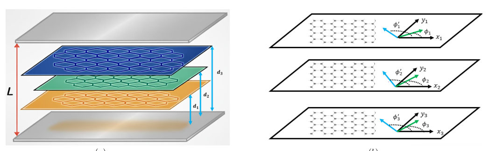
<figcaption class="paper-figure-caption"><b>Fig 1.</b> FIG. 1. (a) Physical configuration of the triple-layer graphene cavity system and (b) the initial/final momentum angles of conduction electrons.</figcaption>
</figure>
<figure class="paper-figure-card">
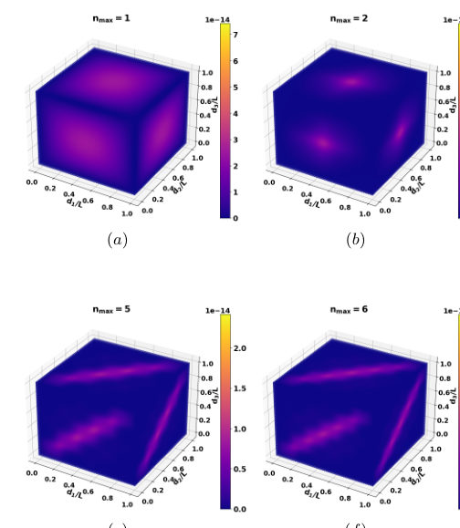
<figcaption class="paper-figure-caption"><b>Fig 2.</b> FIG. 2. Relative entropy of coherence Cr over α2(t) as a function of di</figcaption>
</figure>
<figure class="paper-figure-card">
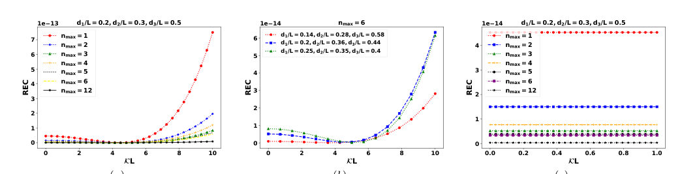
<figcaption class="paper-figure-caption"><b>Fig 3.</b> FIG. 3. REC Cr over α2(t) as a function of the momentum K (a) for different values of nmax (b) for different positions of the layers di</figcaption>
</figure>
<figure class="paper-figure-card">
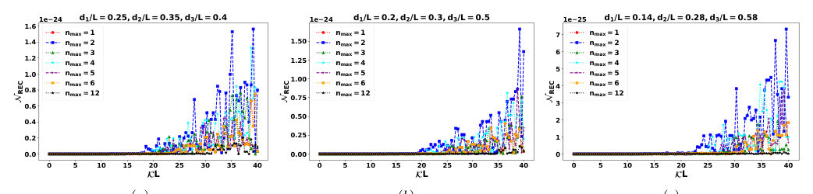
<figcaption class="paper-figure-caption"><b>Fig 4.</b> FIG. 4. Non-Markovianity dynamics measured by NREC as a function of the momentum K for different values of nmax, with varying values of (a) ( d1</figcaption>
</figure>
<figure class="paper-figure-card">
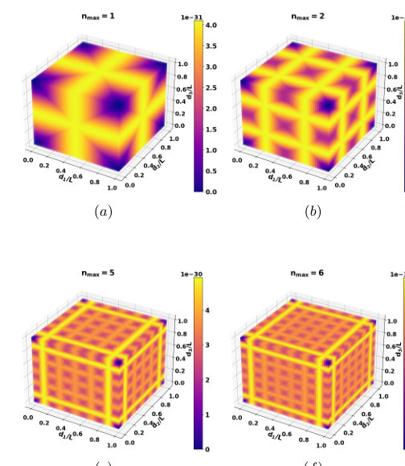
<figcaption class="paper-figure-caption"><b>Fig 5.</b> FIG. 5. Tangle Tg over α2(t) as a function of di</figcaption>
</figure>
</div>

<p><strong>Summary.</strong> The paper models quantum phenomena in triple-layer graphene placed inside an optical microcavity, utilizing vacuum fluctuations as the mediating interaction. By calculating coherence, entanglement, and non-Markovianity using advanced theoretical tools, the authors demonstrate that these quantum resources can be precisely controlled by tuning geometric parameters like layer spacing and rotation angles.</p>
<p><strong>Why it may be interesting.</strong> This work directly addresses quantum resource engineering using solid-state platforms (graphene) coupled to photonic environments, which is a major theme at the intersection of AMO physics and quantum information theory.</p>
<details>
<summary>Detailed structure</summary>
<p><strong>Main problem.</strong> The study investigates how quantum coherence, entanglement, and non-Markovian dynamics can be generated and controlled in a triple-layer graphene system interacting with vacuum fluctuations within a microcavity.</p>
<p><strong>Main result.</strong> The analysis establishes cavity-confined TLG as a highly tunable platform where quantum resources are sensitive to geometric parameters like layer separation and interlayer rotation angles.</p>
<p><strong>Method.</strong> The authors use time-dependent perturbation theory to derive an exact analytic solution for the system's reduced density matrix, followed by calculating specific quantum information measures.</p>
<p><strong>Model / system.</strong> The physical system is a triple-layer graphene (TLG) structure embedded in a planar microcavity. The dynamics are governed by a Hamiltonian involving free electron terms and coupling to quantized cavity electromagnetic fields.</p>
<p><strong>Key observables.</strong> Relative Entropy of Coherence (REC), Tangle ($T_g$) for tripartite entanglement, and Non-Markovianity ($  ext{NREC}$).</p>
<p><strong>Important parameters / regimes.</strong> Number of cutoff modes ($n_{\max}$), spatial positioning/separation ratios ($d_i/L$), interlayer rotation angles ($\phi, \phi'$), and momentum transfer ($K$).</p>
<p><strong>Assumptions / limitations.</strong> The analysis relies on the low-energy Dirac approximation for graphene and is performed perturbatively (up to second order in time).</p>
<p><strong>Figures summary.</strong> Figures illustrate the dependence of REC on layer separation and cutoff modes, and show the temporal evolution of non-Markovianity ($  ext{NREC}$) versus $n_{\max}$ and angular configurations.</p>
<p><strong>Paper structure.</strong> The paper builds from defining the coupled Hamiltonian to deriving the time evolution operator via perturbation theory. It then calculates the reduced density matrix by tracing out the cavity field, culminating in the quantitative analysis of coherence, entanglement, and memory effects based on calculated traces.</p>
</details>
<details>
<summary>Abstract</summary>
<p>We examine the non-Markovian dynamics and the generation of quantum coherence and entanglement within a triple-layer graphene (TLG) system embedded in a planar microcavity. Using time-dependent perturbation theory, we derive an exact analytic solution for the system and demonstrate how the confined electromagnetic field mediates quantum correlations between the graphene layers. We employ three complementary measures; the relative entropy of coherence (REC) to quantify quantum coherence, the tangle to assess tripartite entanglement, and a non-Markovianity measure derived from the REC to characterize quantum memory effects. Our analysis reveals that these quantum resources exhibit remarkable sensitivity to various control parameters. Specifically, we demonstrate that the number of cutoff modes, the spatial positioning of the layers, the momentum parameter, and the interlayer rotation angles provide effective control over coherence, entanglement, and memory effects. We further show that these measures exhibit an exceptional sensitivity to the rotation angle between the layers. Ultimately, our results establish cavity-confined TLG as a highly tunable platform for exploring vacuum-mediated quantum phenomena, providing a framework for the precise manipulation of quantum correlations in graphene-based photonic and optoelectronic devices.</p>
</details>
<p><sub><a href="#top">↑ back to top</a></sub></p>

<p><a id="paper-2606.06621"></a></p>
<h3 id="collective-decay-of-interacting-bosons"><a href="http://arxiv.org/abs/2606.06621v1">Collective decay of interacting bosons</a></h3>
<p><strong>Authors:</strong> Bennet Windt, Lorenzo Rossi, Alexander V. Poshakinskiy, Daniel Malz, Dominik S. Wild<br>
<strong>Type:</strong> theory · <strong>Category:</strong> other · <strong>PDF:</strong> <a href="https://arxiv.org/pdf/2606.06621v1">https://arxiv.org/pdf/2606.06621v1</a><br>
<strong>Analysis basis:</strong> full PDF text, analyzed in chunks
<strong>Topic relevance:</strong> 🔥 <code>Dicke superradiance</code> <strong>5/5</strong> · 🔥 <code>analog quantum simulation</code> <strong>4/5</strong> · 🔥 <code>correlated / nonlocal dissipation</code> <strong>4/5</strong> · <code>Tavis-Cummings &amp; cavity-many-emitter</code> <strong>3/5</strong> · <code>correlated cavity matter</code> <strong>3/5</strong> · <code>driven-dissipative phase transition</code> <strong>3/5</strong> · <code>methods for driven-dissipative</code> <strong>3/5</strong> · <code>non-equilibrium dynamics</code> <strong>2/5</strong> · <code>non-equilibrium universality</code> <strong>2/5</strong> · <code>superradiant laser</code> <strong>2/5</strong> · <code>Keldysh / 2PI / non-Gaussian methods</code> <strong>1/5</strong> · <code>entanglement &amp; information structure</code> <strong>1/5</strong> · <code>free-space correlated emission</code> <strong>1/5</strong></p>
<div class="figure-strip-hint">↔ Scroll figures horizontally</div>
<div class="paper-figures-scroll">
<figure class="paper-figure-card">
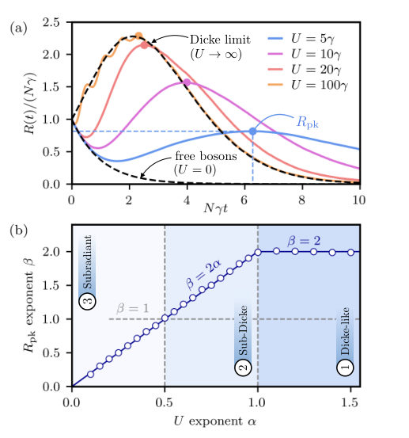
<figcaption class="paper-figure-caption"><b>Fig 1.</b> FIG. 1. Bosonic collective decay. (a) Emission rate dynamics for N = 10 resonators subject to varied interaction strengths U. The limiting cases of two-level emitters (U →∞) and free bosons (U = 0) are indicated by black dashed lines. (b) Regimes of collective emission for a tunable non-linearity U ∼γN α, characterized by distinct asymptotic scalings of the peak emission rate Rpk ∼γN β. We plot the relation between the scaling exponents α and β as given by our theoretical pre- diction (solid line) and extracted from permutation-invariant numerical simulations (markers).</figcaption>
</figure>
<figure class="paper-figure-card">
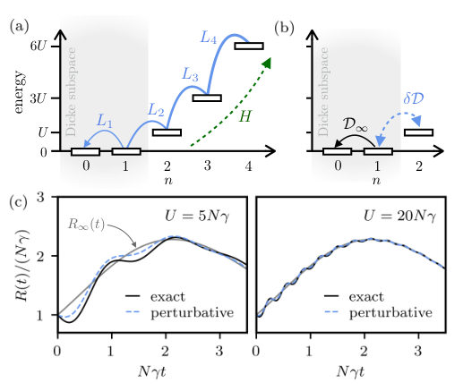
<figcaption class="paper-figure-caption"><b>Fig 2.</b> FIG. 2. Large-U dynamics. (a) Schematic illustration of the auxiliary lattice model, Eq. (3). The action of the Hamiltonian and the collective jump operator are indicated graphically. (b) Graphical representation of the action of the diagonal dissipator D∞and the leading-order large-U perturbative correction δD on the auxiliary lattice. (c) Comparison of the exact and perturbative emission dynamics for N = 10 and two large values of U. The Dicke solution R∞(t) is shown for reference.</figcaption>
</figure>
<figure class="paper-figure-card">
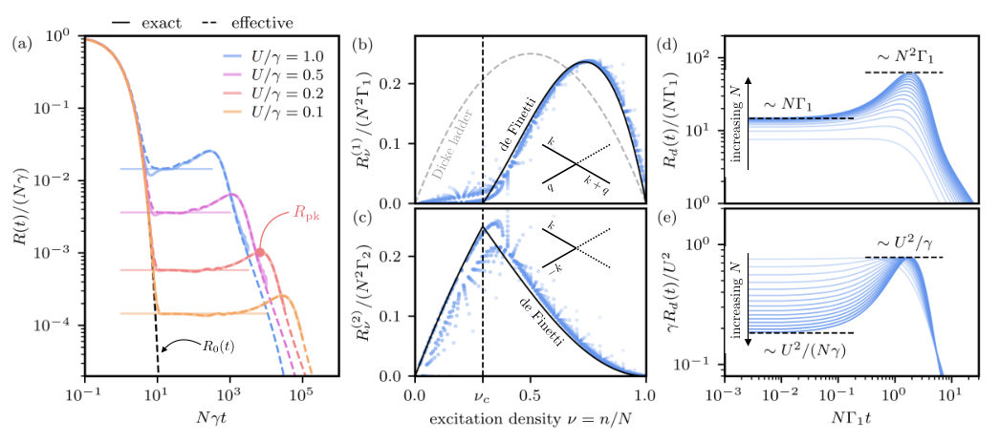
<figcaption class="paper-figure-caption"><b>Fig 3.</b> FIG. 3. Small-U dynamics. (a) Comparison of the exact (solid) and effective (dashed) emission dynamics for N = 30 and varied U in the small-U regime. The analytical values of the emission rate plateaus Rd(0) [41] are indicated by horizontal lines and the emission rate R0(t) for U = 0 is also included for reference. (b) Transition rates R(1) n and (c) R(2) n in the ground state manifold of the effective Hamiltonian Hd (blue markers), for system sizes N = 10, 20, . . . , 100 (indicated by shading). The de Finetti predictions obtained in the End Matter (along with the associated critical excitation density νc = 1 −1/ √</figcaption>
</figure>
<figure class="paper-figure-card">
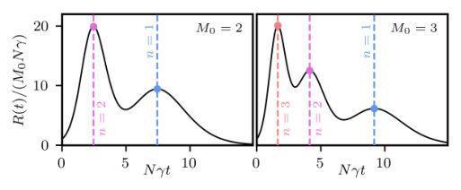
<figcaption class="paper-figure-caption"><b>Fig 4.</b> FIG. 4. Multi-peak dynamics. Dynamics of multi-excited initial Fock states with M0 = 2 (left) and M0 = 3 (right) initial excitations per mode, for N = 100 modes. The emission burst peaks are indicated by vertical dashed lines.</figcaption>
</figure>
</div>

<p><strong>Summary.</strong> The paper explores the collective decay of interacting bosons, modeling it as an analog to the Dicke model. It identifies distinct physical regimes based on interaction strength, showing crossovers from superradiant to subradiant emission. The methodology successfully reduces complex many-body dynamics into manageable rate equations, providing deep insights applicable to circuit QED experiments.</p>
<p><strong>Why it may be interesting.</strong> This work provides a detailed theoretical understanding of how bosonic statistics modify fundamental quantum phenomena like superradiance, offering predictive scaling laws ($eta = 2\alpha$ vs $eta=2$) applicable to cavity QED implementations.</p>
<details>
<summary>Detailed structure</summary>
<p><strong>Main problem.</strong> The study investigates the collective decay dynamics of interacting bosonic modes, serving as a bosonic analog to the Dicke model of superradiance.</p>
<p><strong>Main result.</strong> Distinct regimes are found based on interaction strength: strong interactions yield Dicke-like superradiance, while weak interactions cause a crossover to subradiant emission that surprisingly retains an analogy to rate equations.</p>
<p><strong>Method.</strong> The analysis combines analytical arguments (e.g., adiabatic elimination, variational methods) with large-scale numerical simulations leveraging the problem's permutational symmetry.</p>
<p><strong>Model / system.</strong> The system consists of $N$ bosonic resonators interacting via a repulsive on-site interaction ($U$) and undergoing collective decay governed by a Lindblad master equation. The dynamics are analyzed in various limits, including non-interacting ($U=0$), large-$U$, and small-$U$.</p>
<p><strong>Key observables.</strong> Collective emission rate $R(t)$, peak emission rate $R_{pk}$, and the scaling exponent $eta$ of $R_{pk}$ with system size $N$.</p>
<p><strong>Important parameters / regimes.</strong> Interaction strength ($U$), decay rate ($\gamma$), system size ($N$), and excitation density ($
u$). Key regimes are defined by the ratio $U/(\gamma N)$.</p>
<p><strong>Assumptions / limitations.</strong> The analysis frequently restricts itself to the permutation-invariant subspace, and in some limits (small-$U$), it relies on adiabatic elimination or approximations based on the quantum de Finetti theorem.</p>
<p><strong>Figures summary.</strong> Figures illustrate emission rate dynamics for varying interaction strengths, plot scaling exponents ($eta$ vs $\alpha$), and visualize the structure of the effective dark subspace states and associated rate equations.</p>
<p><strong>Paper structure.</strong> The paper systematically analyzes the decay in different coupling regimes ($U \gg N\gamma$, $U \ll N\gamma$) by mapping the full dynamics onto simplified, yet physically accurate, sets of coupled rate equations or restricted subspaces.</p>
</details>
<details>
<summary>Abstract</summary>
<p>We study a bosonic analog of the paradigmatic Dicke model of superradiance, comprising interacting bosonic modes subject to fully symmetric collective decay. Depending on the interaction strength, we uncover qualitatively distinct regimes of emission. For strong interactions, the emission closely resembles Dicke superradiance, with perturbative corrections arising from the presence of additional levels. For weaker interactions, the bosonic statistics qualitatively changes the dynamics, leading to a crossover to subradiant emission. Remarkably, we show that the dynamics in this regime can be described by rate equations analogous to those of the Dicke model despite the large accessible bosonic Hilbert space. Our findings are based on a combination of analytical arguments and large-scale numerics enabled by the permutational symmetry of the problem and may be probed in circuit QED experiments.</p>
</details>
<p><sub><a href="#top">↑ back to top</a></sub></p>

<p><a id="paper-2606.06653"></a></p>
<h3 id="higher-order-symmetric-quantum-mpemba-effect-in-fragmented-systems"><a href="http://arxiv.org/abs/2606.06653v1">Higher-order Symmetric Quantum Mpemba Effect in Fragmented Systems</a></h3>
<p><strong>Authors:</strong> Sreemayee Aditya, Sara Murciano, Xhek Turkeshi<br>
<strong>Type:</strong> theory · <strong>Category:</strong> statistical mechanics · <strong>PDF:</strong> <a href="https://arxiv.org/pdf/2606.06653v1">https://arxiv.org/pdf/2606.06653v1</a><br>
<strong>Analysis basis:</strong> full PDF text, analyzed in chunks
<strong>Topic relevance:</strong> 🔥 <code>scars &amp; prethermalization</code> <strong>5/5</strong> · 🔥 <code>entanglement &amp; information structure</code> <strong>4/5</strong> · 🔥 <code>non-equilibrium dynamics</code> <strong>4/5</strong> · <code>correlated / nonlocal dissipation</code> <strong>3/5</strong> · <code>driven-dissipative phase transition</code> <strong>3/5</strong> · <code>methods for driven-dissipative</code> <strong>3/5</strong> · <code>non-equilibrium universality</code> <strong>3/5</strong> · <code>Keldysh / 2PI / non-Gaussian methods</code> <strong>2/5</strong> · <code>Kondo &amp; dissipative impurity</code> <strong>1/5</strong> · <code>analog quantum simulation</code> <strong>1/5</strong> · <code>measurement-induced transitions</code> <strong>1/5</strong></p>
<div class="figure-strip-hint">↔ Scroll figures horizontally</div>
<div class="paper-figures-scroll">
<figure class="paper-figure-card">
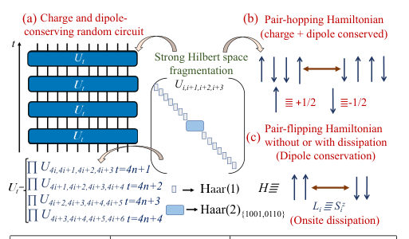
<figcaption class="paper-figure-caption"><b>Fig 1.</b> Figure 1. Schematic and summary of our study.</figcaption>
</figure>
<figure class="paper-figure-card">
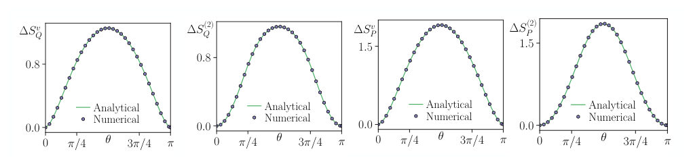
<figcaption class="paper-figure-caption"><b>Fig 2.</b> Figure 2. Von Neumann and R´enyi-2 asymmetries associated with charge and dipole for an initial pure spin-1/2 tilted ferromagnetic state, computed for a boundary subsystem of size LA = 3 as a function of the tilting angle. In all cases, the analytical results are in excellent agreement with the numerical data.</figcaption>
</figure>
<figure class="paper-figure-card">
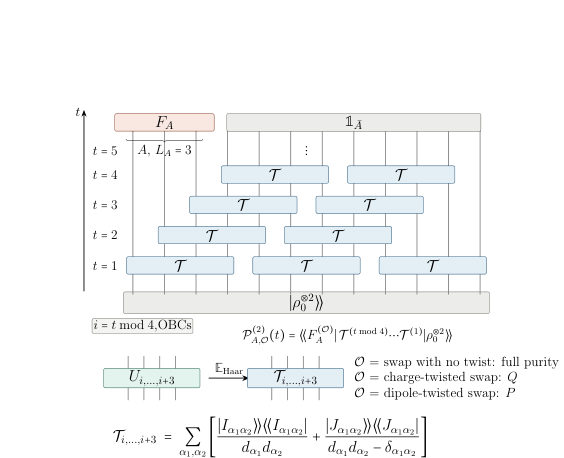
<figcaption class="paper-figure-caption"><b>Fig 3.</b> Figure 3. Replica tensor network for the charge- and dipole- conserving random circuit. The contraction gives the R´enyi-2 purity-like quantities shown for L = 12 and LA = 3. Each in- teger time step applies one staggered layer of Haar-averaged four-site transfer operators, shifted by one site relative to the previous step under OBCs. The lower panel shows how Haar averaging of (U ∗⊗U)⊗2 gives the four-site transfer tensor Ti,...,i+3, subject to the appropriate charge and dipole con- straints. Here O is the untwisted swap for purity, while O = Q and P are the charge- and dipole-twisted swap contractions for charge and dipole-resolved purity, respectively.</figcaption>
</figure>
<figure class="paper-figure-card">
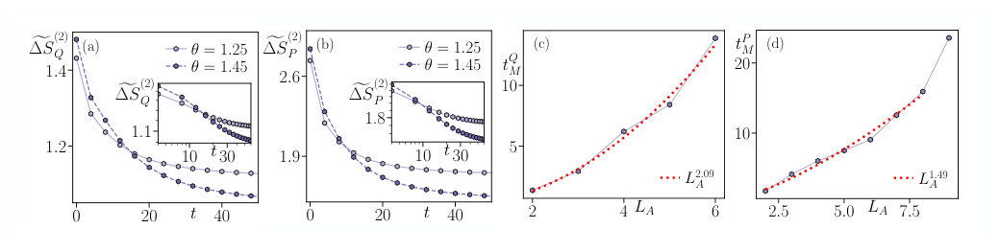
<figcaption class="paper-figure-caption"><b>Fig 4.</b> Figure 4. Charge and dipole asymmetry dynamics in a charge- and dipole-conserving Haar-random circuit with L = 128. (a-b) Charge and dipole second-R´enyi asymmetries for tilted ferromagnetic initial states with θ = 1.25 and θ = 1.45, computed for a boundary subsystem of size LA = 6 using a replica tensor-network method with bond dimension χ = 512. The curves exhibit a quantum-Mpemba-effect-like crossing, followed by slow late-time relaxation to a nonzero saturation value, as shown in the log-log insets. (c-d) Crossing times tQ M and tP M vs LA. For small LA, the data showcases tQ M ∝L2.09 A and tP M ∝L1.49 A ; for larger LA, the crossings disappear within the accessible time window.</figcaption>
</figure>
<figure class="paper-figure-card">
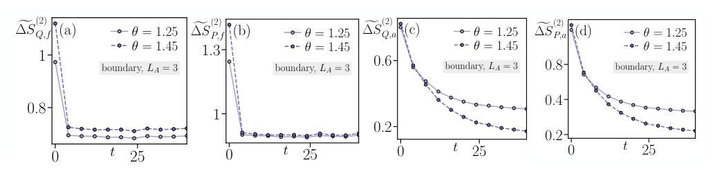
<figcaption class="paper-figure-caption"><b>Fig 5.</b> Figure 5. Frozen and active contributions to the R´enyi-2 entanglement asymmetries for a boundary subsystem in the charge- and dipole-conserving random circuit. The data are obtained for system size L = 16 and subsystem size LA = 3, starting from tilted ferromagnetic initial states with θ = 1.25 and θ = 1.45. Panels (a,b) show the frozen-sector charge and dipole asymmetries, ∆S(2) Q,fr and ∆S(2) P,fr, while panels (c,d) show the corresponding active-sector asymmetries, ∆S(2) Q,act and ∆S(2) P,act. The frozen-sector asymmetries saturate at nonzero plateaux and preserve the ordering between the two initial angles. By contrast, the active- sector asymmetries decay in time and exhibit...</figcaption>
</figure>
</div>

<p><strong>Summary.</strong> This work explores the survival of the quantum Mpemba effect in highly fragmented quantum systems governed by multiple conserved quantities. By analyzing random circuits, deterministic Hamiltonians, and toy models, the authors demonstrate that fragmentation does not eliminate the effect but rather reinterprets it as a combination of memory retention (frozen sector) and active relaxation dynamics.</p>
<p><strong>Why it may be interesting.</strong> It provides a general theoretical framework showing how fundamental non-equilibrium phenomena like the Mpemba effect persist even when quantum dynamics are severely constrained by multiple conservation laws and fragmentation.</p>
<details>
<summary>Detailed structure</summary>
<p><strong>Main problem.</strong> The study investigates whether the quantum Mpemba effect, related to symmetry restoration, survives when a system's Hilbert space is fragmented by multiple conservation laws.</p>
<p><strong>Main result.</strong> A higher-order symmetric quantum Mpemba effect (SQME) is found, which reshapes the standard QME into contributions from 'frozen memory' and 'active-fragment relaxation.'</p>
<p><strong>Method.</strong> The research employs replica tensor-network formulations for random circuits, Chebyshev polynomial expansions for Hamiltonians, and analytical solutions for dissipative toy models.</p>
<p><strong>Model / system.</strong> The analysis covers three settings: a charge/dipole conserving random circuit; a pair-hopping Hamiltonian; and an analytically tractable dissipative pair-flip model. These systems are characterized by strong Hilbert-space fragmentation due to conserved charges (U(1) charge and dipole moment).</p>
<p><strong>Key observables.</strong> Entanglement asymmetry ($\Delta S^{(n)}_O$), which serves as the diagnostic for the Mpemba phenomenon.</p>
<p><strong>Important parameters / regimes.</strong> System size ($L$, up to 128 in RTN), conservation laws (charge $Q$ and dipole moment $P$), and dissipation rate ($\gamma$).</p>
<p><strong>Assumptions / limitations.</strong> The random circuit analysis relies on replica tensor networks for averaging; the dissipative model uses a Markovian approximation.</p>
<p><strong>Figures summary.</strong> Figures illustrate the comparison of results across three settings (RTN, Hamiltonian simulation, Lindblad dynamics), showing QME crossings and the separation into frozen/active dynamic sectors.</p>
<p><strong>Paper structure.</strong> The paper systematically analyzes the QME in increasingly complex models: first random circuits using RTNs, then deterministic Hamiltonians via Chebyshev methods, and finally a simple dissipative toy model to isolate the mechanism.</p>
</details>
<details>
<summary>Abstract</summary>
<p>A quantum system can restore a broken symmetry faster the more strongly it initially breaks it, an anomaly known as the quantum Mpemba effect. Whether this effect survives once conservation laws fragment the Hilbert space into exponentially many disconnected Krylov sectors has remained open. We address this question for circuits and Hamiltonians with simultaneous charge and dipole conservation, the paradigmatic setting for strong Hilbert-space fragmentation. Combining a replica tensor-network formulation for charge and dipole-conserving gates, which reaches the annealed Rényi-2 entanglement asymmetry up to $L=128$, with Hamiltonian simulations and an exactly solvable dissipative model, we uncover a higher-order symmetric quantum Mpemba effect: the charge and dipole asymmetries each display Mpemba-like crossings on parametrically distinct timescales. Resolving the state into frozen and active Krylov sectors reveals the mechanism: frozen fragments retain a finite asymmetry that obstructs full restoration, while active fragments host the relaxation responsible for the crossings. Fragmentation thus does not preclude the quantum Mpemba effect but reshapes it into frozen memory and active-fragment relaxation, providing a framework for the Mpemba phenomenology of higher-moment symmetries.</p>
</details>
<p><sub><a href="#top">↑ back to top</a></sub></p>

<p><a id="paper-2606.07051"></a></p>
<h3 id="quantum-correlations-and-coherence-in-a-two-qubit-anisotropic-math73math-under-magnetic-field"><a href="http://arxiv.org/abs/2606.07051v1">Quantum correlations and coherence in a two-qubit anisotropic $XY$ under magnetic field</a></h3>
<p><strong>Authors:</strong> Ahmed Jellal, Pablo Díaz, David Laroze<br>
<strong>Type:</strong> theory · <strong>Category:</strong> statistical mechanics · <strong>PDF:</strong> <a href="https://arxiv.org/pdf/2606.07051v1">https://arxiv.org/pdf/2606.07051v1</a><br>
<strong>Analysis basis:</strong> full PDF text, analyzed in chunks
<strong>Topic relevance:</strong> 🔥 <code>entanglement &amp; information structure</code> <strong>5/5</strong> · 🔥 <code>analog quantum simulation</code> <strong>4/5</strong> · <code>correlated / nonlocal dissipation</code> <strong>3/5</strong> · <code>exotic spin models in light-matter</code> <strong>3/5</strong> · <code>driven-dissipative phase transition</code> <strong>2/5</strong> · <code>methods for driven-dissipative</code> <strong>2/5</strong> · <code>non-equilibrium dynamics</code> <strong>2/5</strong> · <code>Keldysh / 2PI / non-Gaussian methods</code> <strong>1/5</strong> · <code>non-equilibrium universality</code> <strong>1/5</strong> · <code>spintronics-quantum-optics interface</code> <strong>1/5</strong></p>
<div class="figure-strip-hint">↔ Scroll figures horizontally</div>
<div class="paper-figures-scroll">
<figure class="paper-figure-card">
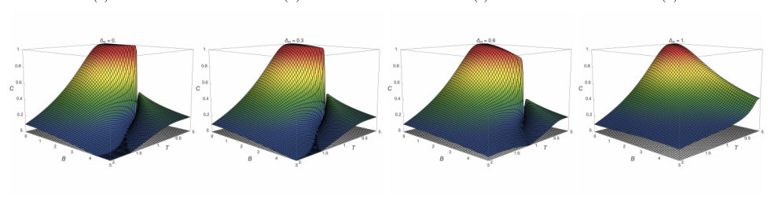
<figcaption class="paper-figure-caption"><b>Fig 1.</b> FIG. 1. Concurrence C as a function of temperature T, and magnetic field B for δc = 0.9, J = 1, and D = 2. Panels (a)–(d) correspond to δm = 0, 0.3, 0.6, and 1, respectively.</figcaption>
</figure>
<figure class="paper-figure-card">
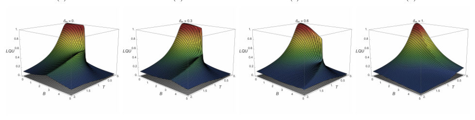
<figcaption class="paper-figure-caption"><b>Fig 2.</b> FIG. 2. Local quantum uncertainty (LQU) as a function of temperature T, and magnetic field B for δc = 0.9, J = 1, and D = 2. Panels (a)–(d) correspond to δm = 0, 0.3, 0.6, and 1, respectively.</figcaption>
</figure>
<figure class="paper-figure-card">
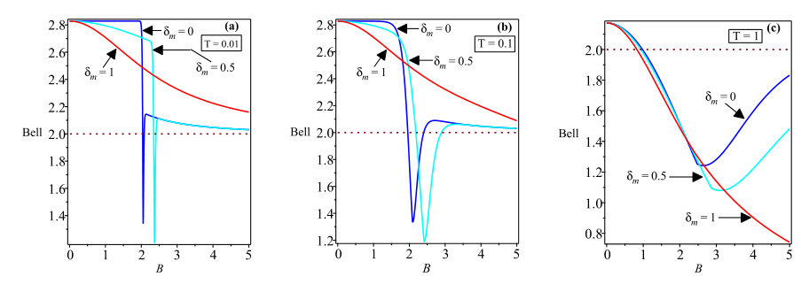
<figcaption class="paper-figure-caption"><b>Fig 3.</b> FIG. 3. Effect of magnetic anisotropy δm, and temperature T on the Bell–CHSH observable B as a function of the magnetic field B for D = 1, J = 1, and δc = 1.</figcaption>
</figure>
<figure class="paper-figure-card">
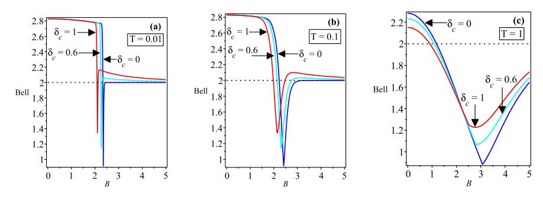
<figcaption class="paper-figure-caption"><b>Fig 4.</b> FIG. 4. Effect of the coupling anisotropy δc, and temperature T on the Bell–CHSH observable B as a function of the magnetic field B for D = 2, J = 1, and δm = 0.3.</figcaption>
</figure>
<figure class="paper-figure-card">
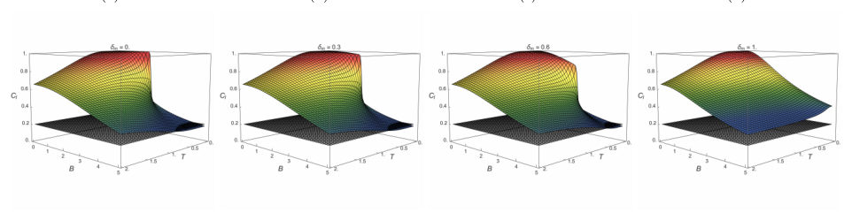
<figcaption class="paper-figure-caption"><b>Fig 5.</b> FIG. 5. Quantum coherence Cl as a function of temperature T ∈[0, 2], and magnetic field B ∈[0, 5] for δc = 0.9, J = 1, and D = 2. Panels (a)–(d) correspond to δm = 0, 0.3, 0.6, and 1, respectively.</figcaption>
</figure>
</div>

<p><strong>Summary.</strong> The paper analyzes thermal degradation of quantum resources—including entanglement and nonlocality—in an anisotropic two-qubit XY model. It establishes a hierarchy showing that coherence ($\mathcal{C}_l$) is the most resilient resource against temperature fluctuations, while anisotropy parameters allow for active control over these quantum correlations.</p>
<p><strong>Why it may be interesting.</strong> This work provides a quantitative framework for understanding how environmental noise (temperature) degrades different forms of quantum information in structured spin systems, which is crucial for designing robust quantum memories or processors.</p>
<details>
<summary>Detailed structure</summary>
<p><strong>Main problem.</strong> The study investigates how thermal quantum correlations, entanglement, and coherence behave in a two-qubit anisotropic XY model subjected to an external magnetic field.</p>
<p><strong>Main result.</strong> A clear hierarchy of resource degradation is established: nonlocality vanishes first, followed by entanglement, while quantum coherence persists the longest against increasing temperature. Anisotropy parameters offer tunable control over these resources.</p>
<p><strong>Method.</strong> The analysis uses the canonical density operator $\rho(T)$ derived from the system's Hamiltonian and calculates various quantum measures using explicit matrix elements.</p>
<p><strong>Model / system.</strong> The physical model is a two-qubit anisotropic Heisenberg XY model incorporating Dzyaloshinskii-Moriya (DM) interaction, analyzed under thermal equilibrium conditions defined by temperature $T$ and magnetic field $B$.</p>
<p><strong>Key observables.</strong> Concurrence ($C$, entanglement), Local Quantum Uncertainty (LQU), Bell–CHSH nonlocality ($\mathbb{B}$), and $\ell_1$-norm coherence ($\mathcal{C}_l$).</p>
<p><strong>Important parameters / regimes.</strong> Magnetic anisotropy ($\delta_m$), coupling anisotropy ($\delta_c$), DM interaction strength ($D$), Temperature ($T$), and external magnetic field ($B$).</p>
<p><strong>Assumptions / limitations.</strong> The system's state is described by the thermal density operator $\rho(T)$, which is analyzed using X-state approximations for certain calculations.</p>
<p><strong>Figures summary.</strong> Figures illustrate the dependence of LQU, Bell nonlocality ($\mathbb{B}$), and coherence ($\mathcal{C}_l$) on temperature ($T$), magnetic field ($B$), and anisotropy parameters ($\delta_m$, $\delta_c$).</p>
<p><strong>Paper structure.</strong> The paper systematically analyzes four key quantum indicators—entanglement, LQU, nonlocality, and coherence—by varying external fields and internal anisotropies to map out the hierarchy of resource robustness.</p>
</details>
<details>
<summary>Abstract</summary>
<p>We study thermal quantum correlations and coherence in Heisenberg $XY$ model with anisotropic interactions under a uniform magnetic field $ B $. Using concurrence $C$, local quantum uncertainty (LQU), Bell-Clauser-Horne-Shimony-Holt (CHSH) nonlocality $ \mathbb{B}$, and coherence $C_l$ as quantifiers, we analyze how magnetic anisotropy $ δ_m $, coupling anisotropy $ δ_c $, Dzyaloshinskii-Moriya (DM) interaction $ D $, temperature $ T $, and magnetic field $ B $ modulate quantum resources. At low temperatures and relevant magnetic fields, the entanglement is maximized, but exhibits sudden death for $ δ_m = 0 $, which turns into a smooth decay as $ δ_m $ increases, highlighting its stabilizing role. LQU shows that stronger anisotropy suppresses quantum correlations, while $ \mathbb{B} $ induces a non-monotonic response peaking at a critical field $ B_c $. Bell-CHSH nonlocality violations ($ \mathbb{B} &gt; 2 $) persist below $ B_c $, but thermal noise ($ T \geq 1 $) suppresses them. Coherence $ C_l $ is most robust to thermal fluctuations, especially for high \( δ_m \), which also dampens abrupt quantum phase transitions. The DM interaction is essential for entanglement generation, with $ D $ and anisotropy synergistically enhancing correlation resilience. We identify a hierarchy of thermal degradation: nonlocality ($ \mathbb{B} $) vanishes first, followed by entanglement ($ C $), then general quantum correlations (LQU), while coherence $ C_l $ persists the longest. These results demonstrate tunable control of quantum resources via anisotropy and external parameters, providing insights for the design of robust spin-based quantum technologies.</p>
</details>
<p><sub><a href="#top">↑ back to top</a></sub></p>

<p><a id="paper-2606.06598"></a></p>
<h3 id="a-superconducting-surface-code-processor-with-lattice-surgery-logical-operations"><a href="http://arxiv.org/abs/2606.06598v1">A superconducting surface-code processor with lattice-surgery logical operations</a></h3>
<p><strong>Authors:</strong> Yanzhe Wang, Fanhao Shen, Haipeng Xie, Aosai Zhang, Yu Gao, Chuanyu Zhang, Xuhao Zhu, Feitong Jin, Yiren Zou, Ning Wang, Zhengyi Cui, Zehang Bao, Zitian Zhu, Jiarun Zhong, Gongyu Liu, Jia-Nan Yang, Yihang Han, Yiyang He, Jiayuan Shen, Han Wang, Jiahua Huang, Xinrong Zhang, Sailang Zhou, Hang Dong, Jinfeng Deng, Yaozu Wu, Zixuan Song, Hekang Li, Zhen Wang, Chao Song, Qiujiang Guo, Pengfei Zhang, H. Wang, Ying Li<br>
<strong>Type:</strong> experiment · <strong>Category:</strong> quantum information and computing · <strong>PDF:</strong> <a href="https://arxiv.org/pdf/2606.06598v1">https://arxiv.org/pdf/2606.06598v1</a><br>
<strong>Analysis basis:</strong> full PDF text, analyzed in chunks
<strong>Topic relevance:</strong> 🔥 <code>QC/QI experiment</code> <strong>5/5</strong> · <code>entanglement &amp; information structure</code> <strong>1/5</strong> · <code>quantum measurements</code> <strong>1/5</strong></p>
<div class="figure-strip-hint">↔ Scroll figures horizontally</div>
<div class="paper-figures-scroll">
<figure class="paper-figure-card">
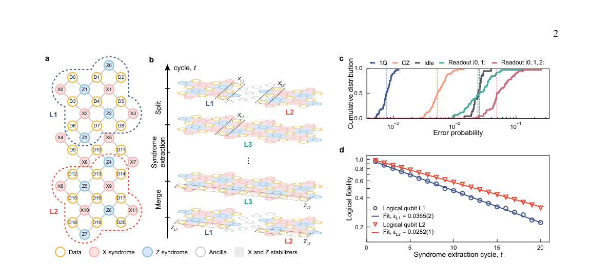
<figcaption class="paper-figure-caption"><b>Fig 1.</b> FIG. 1. Experimental layout and device performance. a, Qubit connectivity used for lattice surgery. The lattice comprises data qubits (gold circles), X-type syndrome qubits (red circles), and Z-type syndrome qubits (blue circles). Each syndrome qubit is coupled to two or four neighboring data qubits, facilitating the stabilizer measurements. b, Conceptual illustration of lattice-merge and lattice-split operations. Two distance-three surface-code patches, denoted as L1 and L2, are embedded in a two-dimensional square grid of physical qubits. The two patches are positioned such that their logical X operators face each other and are connected by seven ancilla qubits (gray circles), enabling...</figcaption>
</figure>
<figure class="paper-figure-card">
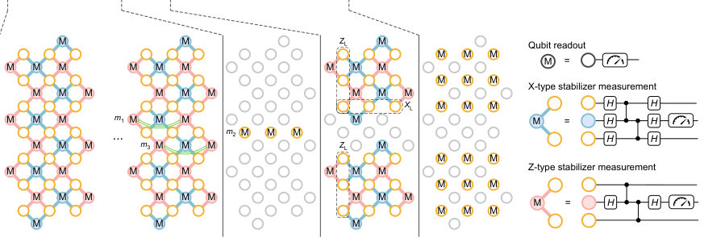
<figcaption class="paper-figure-caption"><b>Fig 2.</b> FIG. 2. Characterization of the logical Bell state generated via lattice split. a, Simplified circuit for preparing a logical Bell state. The system is initialized by preparing all data qubits in the logical state |0L3⟩of a 7 × 3 merged surface code. The lattice is subsequently split into two entangled 3 × 3 code patches by measuring the ancilla data qubits. Pauli-frame updates, conditioned on the intermediate measurement outcomes (m1, m2, and m3; see below), are applied during post-processing (dashed boxes). b, Physical operations corresponding to each step in the circuit. Each SEC consists of four layers of CZ gates followed by a round of measurements on the syndrome qubits. To perform...</figcaption>
</figure>
<figure class="paper-figure-card">
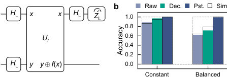
<figcaption class="paper-figure-caption"><b>Fig 3.</b> FIG. 3. Logical implementation of the Deutsch-Jozsa algorithm. a, Simplified circuit diagram of the Deutsch-Jozsa algorithm, which is proposed to distinguish between constant and balanced functions in a single trial. In this two-qubit implementation, the quantum ora- cle Uf is efficiently realized via lattice surgery between two surface- code logical qubits. b, Measured accuracy of the logical algorithm for both constant and balanced functions. Dashed and solid wire- frames represent the ideal values and simulation results, respectively. c-d, Effect of soft post-selection based on argument reweighting (c) and complementary gap (d). Increasing the suppression parameter or gap threshold...</figcaption>
</figure>
<figure class="paper-figure-card">
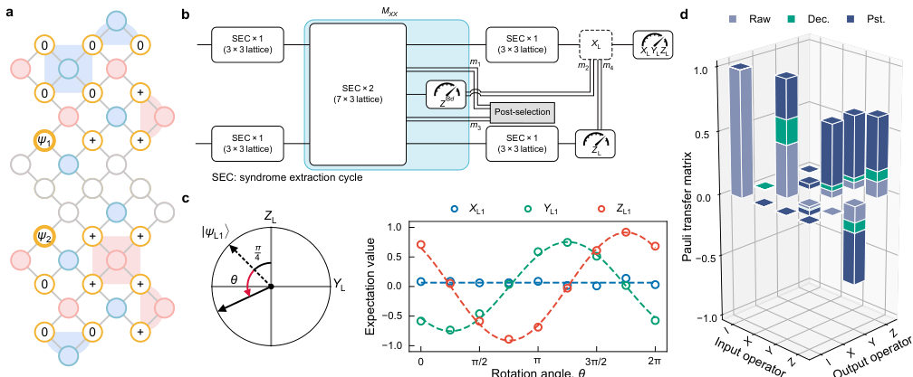
<figcaption class="paper-figure-caption"><b>Fig 4.</b> FIG. 4. Implementation of logical gate teleportation via lattice surgery. a, Protocol for logical magic state preparation. For each surface- code patch, the unique physical data qubit participating in both XL and ZL is initialized in the target physical magic state (|ψ1⟩or |ψ2⟩). The remaining data qubits are prepared in |0⟩or |+⟩, such that a subsequent round of syndrome extraction projects the code into the desired logical magic state (|ψL1⟩or |ψL2⟩). b, Circuit diagram for an arbitrary rotation around the logical X axis. Lattice merge and split operations between two surface-code patches implement a joint parity measurement MXX. Because the measurement outcome m = m1m3 indicates the...</figcaption>
</figure>
</div>

<p><strong>Summary.</strong> This paper reports an experimental realization of lattice-surgery operations on a superconducting surface code processor. By performing syndrome extraction cycles and utilizing advanced techniques like magic-state injection, the researchers demonstrated fault-tolerant logical computation. The results establish lattice surgery as a practical method for achieving high-fidelity quantum gates necessary for scalable quantum computing.</p>
<p><strong>Why it may be interesting.</strong> For a theoretical physicist, this work provides crucial experimental benchmarks for fault tolerance thresholds and validates specific physical protocols (like lattice surgery) that can be modeled theoretically to predict scaling behavior towards quantum advantage.</p>
<details>
<summary>Detailed structure</summary>
<p><strong>Main problem.</strong> The primary goal is demonstrating fault-tolerant logical operations, specifically lattice-surgery, between superconducting surface-code logical qubits to advance scalable quantum computation.</p>
<p><strong>Main result.</strong> The authors successfully demonstrated lattice-surgery, achieving a high logical gate fidelity of 0.943 for an RX(pi/4) rotation, validating this paradigm for fault-tolerant circuits in superconducting platforms.</p>
<p><strong>Method.</strong> The work involves repeated syndrome extraction cycles (SECs), deterministic state preparation via lattice splitting, executing algorithms like Deutsch-Jozsa, and implementing universal gates using magic-state injection and gate teleportation.</p>
<p><strong>Model / system.</strong> The experiment is performed on a planar superconducting processor utilizing transmon qubits configured into distance-three surface-code patches. The system supports nearest-neighbor couplings and uses techniques like CPMG decoupling to protect data qubits.</p>
<p><strong>Key observables.</strong> Logical error rates (e.g., 0.0365 per cycle), logical Bell state fidelity (up to 0.925 post-selection), and the gate fidelity for non-Clifford rotations ($    ext{RX}(\pi/4)$).</p>
<p><strong>Important parameters / regimes.</strong> Distance of the code (d=3), physical error probabilities (e.g., CZ gate fidelity $\approx 0.996$), and coherence times ($T_1 \approx 45 \mu	ext{s}$).</p>
<p><strong>Assumptions / limitations.</strong> The high logical fidelities are conditioned on the absence of detected errors, and the current implementation relies heavily on post-selection rather than fully active error correction.</p>
<p><strong>Figures summary.</strong> Figures illustrate the experimental layout, conceptual lattice-merge/split operations, decay curves showing logical memory performance over SECs, and circuit diagrams detailing algorithm execution and gate teleportation protocols.</p>
<p><strong>Paper structure.</strong> The paper progresses from characterizing physical hardware fidelity (gate errors, coherence times) to demonstrating basic error correction via syndrome extraction cycles, then implementing complex logical tasks like Bell state generation and Deutsch-Jozsa, culminating in the realization of universal gates via lattice surgery.</p>
</details>
<details>
<summary>Abstract</summary>
<p>Fault-tolerant logical operations are fundamental for scalable quantum computation. Here, we report the experimental realization of lattice-surgery operations between a pair of distance-three surface-code logical qubits on a planar superconducting processor. During repeated syndrome extraction cycles, the logical qubits exhibit per-cycle error rates of $0.0365(2)$ and $0.0282(1)$, respectively, after leakage events are rejected. By leveraging joint initialization and lattice splitting, we deterministically prepare a logical Bell state, confirming genuine bipartite entanglement via the error-corrected logical state fidelity. We further execute a two-qubit Deutsch-Jozsa algorithm at the logical level to demonstrate algorithmic utility in a fault-tolerant framework. Finally, to achieve universal control, we implement magic-state injection and gate teleportation to realize continuous non-Clifford rotations about the logical $X$ axis. For the logical $R_{X}(π/4)$ gate, we achieve a logical gate fidelity of $0.943_{-9}^{+10}$ conditioned on the absence of detected errors. These results establish lattice surgery as a practical and versatile paradigm for logical computation in near-term surface-code architectures, representing a critical milestone toward scalable fault-tolerant quantum advantage in superconducting circuits.</p>
</details>
<p><sub><a href="#top">↑ back to top</a></sub></p>

<p><a id="paper-2606.07458"></a></p>
<h3 id="collective-emission-of-subwavelengths-atom-like-emitter-arrays-in-the-presence-of-inhomogeneous-broadening"><a href="http://arxiv.org/abs/2606.07458v1">Collective emission of subwavelengths atom-like emitter arrays in the presence of inhomogeneous broadening</a></h3>
<p><strong>Authors:</strong> Uri Israeli, Shahar Levi, Sagi Ben-Avi, Ada Kransnovsky, Daniel Silvian, Shlomo Winberg, Rivka Bekenstein<br>
<strong>Type:</strong> both · <strong>Category:</strong> other · <strong>PDF:</strong> <a href="https://arxiv.org/pdf/2606.07458v1">https://arxiv.org/pdf/2606.07458v1</a><br>
<strong>Analysis basis:</strong> full PDF text, analyzed in chunks
<strong>Topic relevance:</strong> 🔥 <code>Dicke superradiance</code> <strong>4/5</strong> · 🔥 <code>superradiant laser</code> <strong>4/5</strong> · <code>correlated / nonlocal dissipation</code> <strong>3/5</strong> · <code>interference shaping light</code> <strong>3/5</strong> · <code>quantum optics experiment</code> <strong>3/5</strong> · <code>Tavis-Cummings &amp; cavity-many-emitter</code> <strong>2/5</strong> · <code>driven-dissipative phase transition</code> <strong>2/5</strong> · <code>methods for driven-dissipative</code> <strong>2/5</strong> · <code>QC/QI experiment</code> <strong>1/5</strong> · <code>analog quantum simulation</code> <strong>1/5</strong> · <code>correlated cavity matter</code> <strong>1/5</strong> · <code>free-space correlated emission</code> <strong>1/5</strong> · <code>non-equilibrium dynamics</code> <strong>1/5</strong> · <code>non-equilibrium universality</code> <strong>1/5</strong></p>
<div class="figure-strip-hint">↔ Scroll figures horizontally</div>
<div class="paper-figures-scroll">
<figure class="paper-figure-card">
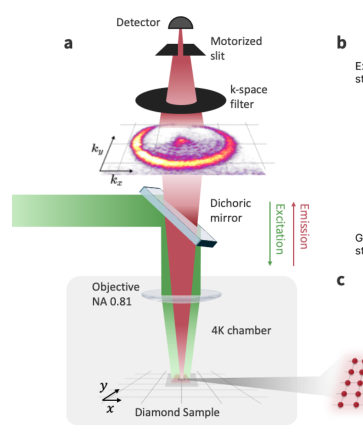
<figcaption class="paper-figure-caption"><b>Fig 1.</b> Fig. 1 a. Experimental setup for probing the collective emission of atom-like emitter arrays. b. The SiV centre is an atom-like emitter system whose ground and excited states are localized at the diamond bandgap. Its spin and optical degeneracies are partially lifted by the spin–orbit interaction, which splits each quartet into two degenerate doublets, so that there are four dipole-allowed optical transitions. These are resonant with light around 737 nm (marked A,B,C,D). We are interested in probing the collective resonance with decay rate Γcollective and spectral shift ∆relative to the bare SiV resonance. c. Each array site is comprised of tens of SiV centres with spectral inhomogeneity...</figcaption>
</figure>
<figure class="paper-figure-card">
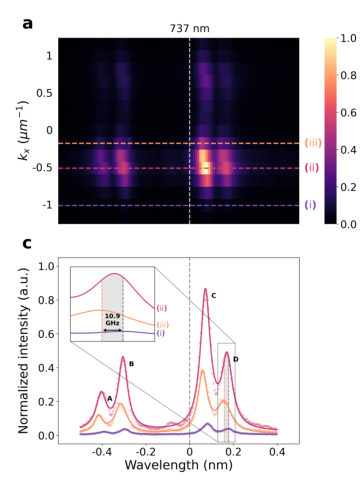
<figcaption class="paper-figure-caption"><b>Fig 2.</b> Fig. 2 a. Spectrum of the collective emission of a SiV subwavelength array, with the four SiV optical transitions as detected in the direction normal to the arrays as a function of the momentum parallel to the array. b,d. The collective linewidth and shifts of the specific collective states emitting as a function of momentum, extracted from the fit for the D transition. c. Cross sections of the spectrum for different momenta, showing the shift in emission frequency, marked (i),(ii),(iii) in all subplots (Inset highlights frequency shift).</figcaption>
</figure>
<figure class="paper-figure-card">
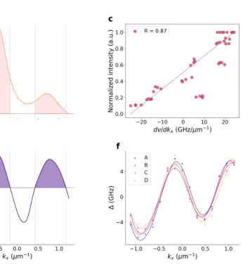
<figcaption class="paper-figure-caption"><b>Fig 3.</b> Fig. 3 Directional emission of the collective response of the array. a. Intensity distribution detected in the direction normal to the array as a function of the momentum parallel to the array. b. Cross sections of the intensity as a function of kx for different momenta, showing the shift in emission frequency. Red-shaded parts mark high-intensity areas. c. Correlations between the extracted group velocity in e and the intensity in b. d. Schematics of the measurement setup, where a lens maps the emission into momentum space and imaging of the lens back focal plane reveals the intensity distribution in k-space. e. Extracted group velocity in the direction parallel to the array (slope of the...</figcaption>
</figure>
<figure class="paper-figure-card">
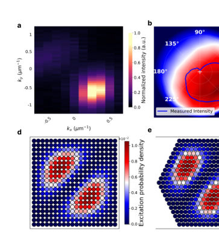
<figcaption class="paper-figure-caption"><b>Fig 4.</b> Fig. 4 a. Measured spatial distribution of the asymmetric collective mode for a square array in the far-field. b. Anisotropic far-field emission of a dipole near the diamond–air interface as calculated by FDTD and compared to the measured uncoupled dipole emission (blue line). c. Schematics of a dipole orientated in the (1,1,1) direction and placed 60 nm beneath the diamond–air surface (displayed is the calculated electric field perpendicular to the array plane). d,e. Calculated asymmetric subradiant modes of square and honeycomb arrays. f. Probability of superradiance for a superatom of 40 emitters at a location with high emitter density. 20 percent of the superatoms are expected to be...</figcaption>
</figure>
</div>

<p><strong>Summary.</strong> The authors report observing robust collective emission from arrays of silicon-vacancy centers in diamond, overcoming the theoretical hurdle posed by strong inhomogeneous broadening. By engineering 'superatoms' at each site, they demonstrate that solid-state emitter arrays can function as highly controllable quantum-emitter metasurfaces. This paves the way for integrating quantum light sources directly into nanophotonic circuits.</p>
<p><strong>Why it may be interesting.</strong> This work directly addresses how to engineer coherent quantum light sources using solid-state defects in nanophotonic environments. The ability to maintain collective coherence despite large disorder is a major breakthrough for realizing scalable quantum emitters.</p>
<details>
<summary>Detailed structure</summary>
<p><strong>Main problem.</strong> The primary challenge addressed is demonstrating collective emission from subwavelength emitter arrays despite strong inhomogeneous broadening, a factor previously thought to suppress photon-mediated interactions in solid-state systems.</p>
<p><strong>Main result.</strong> Collective emission was successfully observed, showing characteristic resonance shifts and decay rates that confirm the array acts as a functional quantum-emitter metasurface. This proves that collective effects survive significant disorder in solid-state emitters.</p>
<p><strong>Method.</strong> The work combines experimental measurements of directional emission spectra (momentum mapping) with theoretical analysis using effective Hamiltonians and simulations to model superradiance probability.</p>
<p><strong>Model / system.</strong> The system utilizes subwavelength arrays of silicon-vacancy (SiV) centers in diamond, which are engineered into 'superatoms' via high-density ion implantation. The physics is modeled by diagonalizing an effective Hamiltonian describing collective dipole interactions within the array structure.</p>
<p><strong>Key observables.</strong> Collective resonance frequency shift ($\Delta$), photonic band $\omega(k_{\perp})$, directional emission intensity mapped vs. transverse momentum ($k_x, k_y$), and superradiance probability.</p>
<p><strong>Important parameters / regimes.</strong> The natural linewidth of SiV centers is much smaller than the inhomogeneous broadening (tens of GHz); collective effects are observed when the effective linewidth ($\Gamma_{	ext{eff}}$) reaches specific thresholds.</p>
<p><strong>Assumptions / limitations.</strong> The analysis relies on approximations like Born–Markov, and the initial success hinges on the 'superatom' concept created by ion implantation to overcome frequency mismatch.</p>
<p><strong>Figures summary.</strong> Figures illustrate spectral dependence on momentum (Fourier space), showing characteristic dispersion relations for collective modes; other figures map emission intensity vs. momentum and show spatial mode distributions.</p>
<p><strong>Paper structure.</strong> The paper establishes the problem of inhomogeneity, presents experimental measurements confirming collective shifts and band structures across multiple SiV transitions, supports these findings with theoretical modeling of superradiance, and concludes by demonstrating the viability of this platform for integrated quantum photonics.</p>
</details>
<details>
<summary>Abstract</summary>
<p>Quantum metasurfaces comprised of subwavelength atomic arrays emerged as a promising platform for enhanced atom-photon interaction. However, realizing such a system with solid-state emitters has been considered impractical due to strong inhomogeneous broadening, which was expected to suppress the photon-mediated interactions that underpin collective emission. Here we report the observation of collective emission from subwavelength arrays of silicon-vacancy centres in diamond -- solid-state emitters whose inhomogeneous broadening exceeds the natural linewidth by two orders of magnitude -- demonstrating that collective effects such as resonance shifts, modified decay rates and directional coherent emission survive this disorder. A crucial enabling element is the implantation of a high density of silicon ions at each array site. This creates so-called superatoms, local ensembles that probabilistically achieve frequency matching across the array and enhance the collective response. We support our observations   with a theoretical analysis explaining the mechanisms that preserve the collective effects even in the presence of inhomogeneity. These observations have direct implications for the realization of subwavelength arrays in any solid-state system, paving the way for quantum-emitter metasurfaces that are naturally integrated into nanophotonic environments.</p>
</details>
<p><sub><a href="#top">↑ back to top</a></sub></p>

<p><a id="paper-2606.07378"></a></p>
<h3 id="ferroelectrical-switching-as-a-probe-of-quantum-damping-in-magnetic-spin-systems"><a href="http://arxiv.org/abs/2606.07378v1">Ferroelectrical Switching as a Probe of Quantum Damping in Magnetic Spin Systems</a></h3>
<p><strong>Authors:</strong> Yuefei Liu, Anna Delin, Olle Eriksson, Erik Sjöqvist, Kaiyou Wang, Qirui Cui<br>
<strong>Type:</strong> theory · <strong>Category:</strong> other · <strong>PDF:</strong> <a href="https://arxiv.org/pdf/2606.07378v1">https://arxiv.org/pdf/2606.07378v1</a><br>
<strong>Analysis basis:</strong> full PDF text, analyzed in chunks
<strong>Topic relevance:</strong> 🔥 <code>entanglement &amp; information structure</code> <strong>4/5</strong> · <code>analog quantum simulation</code> <strong>3/5</strong> · <code>exotic spin models in light-matter</code> <strong>3/5</strong> · <code>methods for driven-dissipative</code> <strong>3/5</strong> · <code>non-equilibrium dynamics</code> <strong>3/5</strong> · <code>spintronics-quantum-optics interface</code> <strong>3/5</strong> · <code>Keldysh / 2PI / non-Gaussian methods</code> <strong>2/5</strong> · <code>correlated / nonlocal dissipation</code> <strong>2/5</strong> · <code>driven-dissipative phase transition</code> <strong>2/5</strong> · <code>non-equilibrium universality</code> <strong>2/5</strong> · <code>Kondo &amp; dissipative impurity</code> <strong>1/5</strong> · <code>scars &amp; prethermalization</code> <strong>1/5</strong></p>
<div class="figure-strip-hint">↔ Scroll figures horizontally</div>
<div class="paper-figures-scroll">
<figure class="paper-figure-card">
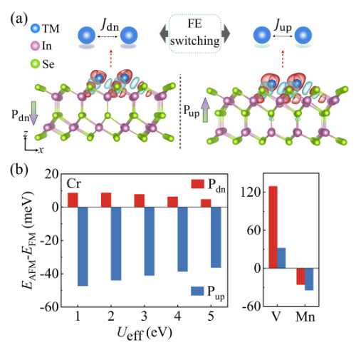
<figcaption class="paper-figure-caption"><b>Fig 1.</b> FIG. 1. The ferroelectricity tunes the magnetic dimer coupling strength from Jup to Jdn, as the In2Se3 substrate polarization switches from upward to downward, as illustrated in (a). The schematics of the crystal structure of the magnetic transition metal (TM) dimer on the In2Se3 substrate with downward polarization Pdn and upward po- larization Pup. For Cr, The out-of-plane electric polarization reaches -0.054 eÅ/u.c. in the downward state and 0.116 eÅ/u.c. in the upward state. The bonding between Cr and In2Se3 can be seen from the charge-density difference, ∆ρ = ρ(HS) −ρ(Cr) −ρ(In2Se3), as shown by the contour maps at the isovalue ∆ρ = ±2 × 10−3 e/Å3. (b) For the Cr dimer, the...</figcaption>
</figure>
<figure class="paper-figure-card">
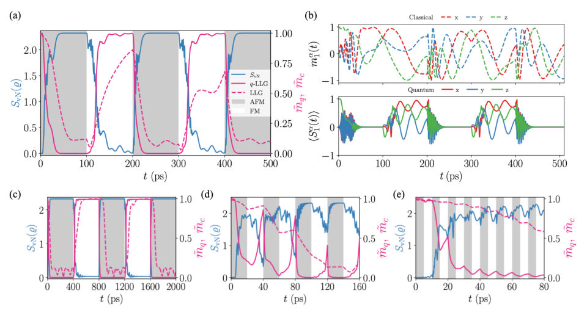
<figcaption class="paper-figure-caption"><b>Fig 2.</b> FIG. 2. (a) q-LLG time evolution of the von Neumann entropy S vN(ϱ) as well as the q-LLG ( ˜mq(t)) and LLG ( ˜mc(t)) average magnetic moment per Cr atom, for a Cr dimer on an In2Se3 substrate under FE switching. Simulations start from the FM product quantum state |↑↑⟩and corresponding FM classical configuration ↑↑. At t = 100, 200, 300, 400 ps, the Cr–Cr couplings are switched between the polarization-induced parameter sets Pup (AFM) and Pdn (FM), as listed in Table I, in the sequence AFM–FM–AFM–FM–AFM. (b) Component-resolved dynamics for one spin in the dimer (the other is mirrored): the q-LLG expectation values ⟨S β 1(t)⟩and the LLG magnetic-moment components mβ 1(t) for β ∈{x, y, z}....</figcaption>
</figure>
<figure class="paper-figure-card">
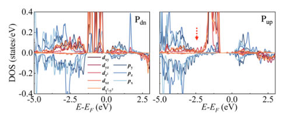
<figcaption class="paper-figure-caption"><b>Fig 3.</b> FIG. 3. The projected density of states (DOS) of Cr dimer on In2Se3. The red dotted arrow is to emphasis that the p−d orbital hybridization is weakened when Pup up polarization.</figcaption>
</figure>
</div>

<p><strong>Summary.</strong> The research proposes using ferroelectric control over magnetic dimers to probe quantum corrections to spin damping. By linking polarization switching to the transition between FM and AFM exchange regimes, the authors demonstrate that magnetization dynamics can reveal signatures of quantum entanglement through advanced simulation techniques comparing classical and quantum descriptions.</p>
<p><strong>Why it may be interesting.</strong> This work directly bridges first-principles electronic structure calculations (DFT) with open quantum system dynamics simulations (q-LLG), providing a concrete, tunable solid-state platform to observe fundamental quantum mechanical effects like entanglement in magnetic materials.</p>
<details>
<summary>Detailed structure</summary>
<p><strong>Main problem.</strong> The primary goal is to develop a method to experimentally distinguish genuine quantum corrections from classical Gilbert damping in magnetic spin systems.</p>
<p><strong>Main result.</strong> Ferroelectric polarization switching can be used to control the inter-spin exchange coupling between ferromagnetic and antiferromagnetic regimes, providing a tunable platform for studying quantum entanglement dynamics in magnetism.</p>
<p><strong>Method.</strong> The study combines ab initio DFT calculations to derive spin Hamiltonian parameters with time evolution simulations using both classical (LLG) and quantum (q-LLG) Landau-Lifshitz-Gilbert equations.</p>
<p><strong>Model / system.</strong> The system involves magnetic dimers adsorbed on ferroelectric substrates ($ ext{In}_2   ext{Se}_3$). The magnetism is controlled by the substrate's polarization state, which modulates orbital hybridization and thus the exchange coupling ($J$) between ferromagnetic (FM) and antiferromagnetic (AFM) states.</p>
<p><strong>Key observables.</strong> Magnetization traces ($    ilde{m}$), entanglement entropy ($S_{   ext{vN}}$), energy difference ($\Delta E$), and the comparison between classical LLG vs. quantum q-LLG dynamics.</p>
<p><strong>Important parameters / regimes.</strong> Hubbard $U_{	ext{eff}}$, polarization state ($  ext{P}<em ext_up="ext{up">{    ext{dn}}$ vs $  ext{P}</em>$), damping parameter ($\alpha = \kappa = 0.1$), and switching time intervals (e.g., 5 ps, 20 ps).}</p>
<p><strong>Assumptions / limitations.</strong> The exchange rearrangement due to polarization reversal is treated as instantaneous; the DMI calculation assumes a fixed spin canting angle of $90^\circ$.</p>
<p><strong>Figures summary.</strong> Figures illustrate how FE switching modulates $\Delta E$ between FM and AFM phases (Fig. 1), and show time evolution comparisons of entanglement entropy ($S_{	ext{vN}}$) and magnetization ($   ilde{m}$) between classical LLG and quantum q-LLG simulations during polarization cycling (Fig. 2).</p>
<p><strong>Paper structure.</strong> The paper first establishes the physical control mechanism using DFT to link FE polarization to exchange coupling strength ($\Delta E$). It then extends this by simulating spin dynamics, comparing classical vs. quantum approaches, showing that magnetization traces carry a unique signature of entanglement-dependent dynamics only captured by the q-LLG model.</p>
</details>
<details>
<summary>Abstract</summary>
<p>While damped spin dynamics is important for the understanding of magnetic materials, clear signatures of \emph{quantum corrections} to the Gilbert damping mechanism remain elusive. We propose a route to distinguish quantum and classical Gilbert spin damping using ferroelectric control of a magnetic dimer. Ab initio calculations for dimers on ferroelectric substrates show that polarization reversal switches the inter-spin exchange between ferromagnetic and antiferromagnetic regimes. We formulate a magnetization-based diagnostic that relates magnetization traces to entanglement dynamics, which enables ferroelectrical on/off control of dimer entanglement. Material-informed quantum Landau-Lifshitz-Gilbert simulations illustrate how the signature of magnetization dynamics can, in principle, be used to infer the existence of quantum Gilbert spin damping. This minimal and non-volatile platform connects first-principles modeling to experimentally accessible observables and provides a starting point for voltage-controlled quantum entanglement in magnetic spin networks.</p>
</details>
<p><sub><a href="#top">↑ back to top</a></sub></p>

<p><a id="paper-2606.07247"></a></p>
<h3 id="theory-of-learning-of-high-dimensional-controlled-non-linear-dynamical-systems-i-models-and-methods"><a href="http://arxiv.org/abs/2606.07247v1">Theory of learning of high-dimensional controlled non-linear dynamical systems (I): models and methods</a></h3>
<p><strong>Authors:</strong> Pierfrancesco Urbani<br>
<strong>Type:</strong> theory · <strong>Category:</strong> statistical mechanics · <strong>PDF:</strong> <a href="https://arxiv.org/pdf/2606.07247v1">https://arxiv.org/pdf/2606.07247v1</a><br>
<strong>Analysis basis:</strong> full PDF text, analyzed in chunks
<strong>Topic relevance:</strong> 🔥 <code>Keldysh / 2PI / non-Gaussian methods</code> <strong>4/5</strong> · <code>driven-dissipative phase transition</code> <strong>3/5</strong> · <code>methods for driven-dissipative</code> <strong>3/5</strong> · <code>non-equilibrium dynamics</code> <strong>3/5</strong> · <code>non-equilibrium universality</code> <strong>3/5</strong> · <code>analog quantum simulation</code> <strong>2/5</strong> · <code>correlated / nonlocal dissipation</code> <strong>2/5</strong> · <code>entanglement &amp; information structure</code> <strong>2/5</strong> · <code>Kondo &amp; dissipative impurity</code> <strong>1/5</strong> · <code>correlated cavity matter</code> <strong>1/5</strong> · <code>measurement-induced transitions</code> <strong>1/5</strong> · <code>scars &amp; prethermalization</code> <strong>1/5</strong></p>
<div class="figure-strip-hint">↔ Scroll figures horizontally</div>
<div class="paper-figures-scroll">
<figure class="paper-figure-card">
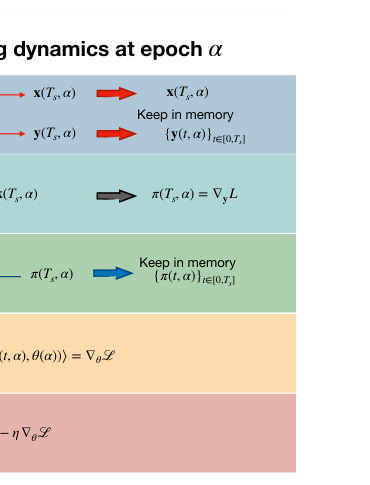
<figcaption class="paper-figure-caption"><b>Fig 1.</b> Figure 1: The pipeline of training dynamics.</figcaption>
</figure>
<figure class="paper-figure-card">
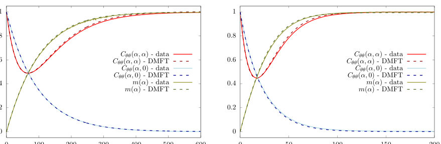
<figcaption class="paper-figure-caption"><b>Fig 2.</b> Figure 2: Comparison between DMFT and numerical simulations. We plot tree observables Cθθ(α, α), Cθθ(α, 0) and m(α) as a function of the training epochs. Left panel: Numerical simula- tions are performed with d = dtheta = 150, g1 = 0.8, g2 = 0.8, µx(z) = µy(z) = z, η = 0.1 and Ts = 0.5 and σ = 1. Right panel: σ = 0.75 with d = 100 and Ts = 1.</figcaption>
</figure>
</div>

<p><strong>Summary.</strong> This paper applies advanced tools from statistical physics, particularly Dynamical Mean Field Theory, to model the learning process in Neural ODEs. It treats the training dynamics as a coupled, high-dimensional stochastic control problem between a 'teacher' and a 'student' system. The work provides theoretical predictions for how deep neural networks learn by analyzing the evolution of correlation functions in the infinite-dimensional limit.</p>
<p><strong>Why it may be interesting.</strong> While focused on ML, the use of mean-field theory, renormalization group concepts (implied by high-dimensional limits), and non-equilibrium statistical mechanics techniques to analyze system evolution is highly relevant to AMO physics studying complex interacting many-body systems or open quantum systems.</p>
<details>
<summary>Detailed structure</summary>
<p><strong>Main problem.</strong> The work aims to theoretically understand feature learning dynamics within high-dimensional, non-linear dynamical systems trained using online stochastic gradient descent.</p>
<p><strong>Main result.</strong> The authors develop a framework using Dynamical Mean Field Theory (DMFT) to derive self-consistent equations governing the evolution of summary statistics for both inference and training processes in the high-dimensional limit.</p>
<p><strong>Method.</strong> The core methodology involves recasting the learning problem into an optimal control setting, applying path integral techniques, and solving the resulting coupled dynamics using Dynamical Mean Field Theory (DMFT).</p>
<p><strong>Model / system.</strong> The model centers on Neural Ordinary Differential Equations (Neural ODEs) within a teacher-student framework. The system involves coupled stochastic processes for state variables ($x$, $y$) and adjoint fields ($\pi$), governed by non-linear dynamics.</p>
<p><strong>Key observables.</strong> Learning curves, correlation functions ($C_{oo'}$), response functions ($R_{oo'}$), and the training objective/loss function derived from these correlations.</p>
<p><strong>Important parameters / regimes.</strong> The analysis is performed in the high-dimensional limit, considering parameters like the learning rate ($\eta$), noise levels ($eta$), and time scales ($T_s, T_t$).</p>
<p><strong>Assumptions / limitations.</strong> Key assumptions include adopting a teacher-student setup, assuming noiseless dynamics for initial DMFT derivations (though noise is incorporated later), and relying on the high-dimensional limit to close the system via summary statistics.</p>
<p><strong>Figures summary.</strong> Figures compare DMFT predictions against numerical simulations, showing how observables like $C_{	heta	heta}$ and $m(\alpha)$ approach unity as training progresses, indicating successful student alignment with the teacher.</p>
<p><strong>Paper structure.</strong> The paper builds from defining the coupled dynamical system (teacher/student) to formulating the objective via a Lagrangian. It then applies path integrals and DMFT to derive self-consistent equations for summary statistics, culminating in predictions for learning curves across various complex regimes.</p>
</details>
<details>
<summary>Abstract</summary>
<p>Neural ordinary differential equations (neural ODEs) have rapidly gained prominence as a powerful and unifying framework for conceptualizing artificial neural networks, elegantly connecting the continuous-time modeling of dynamical systems with the discrete, data-driven paradigm of modern deep learning. Beyond their practical advantages they offer fresh theoretical insights into the training and generalization properties of neural networks. The distinctive feature of this framework is its dual dynamical nature: inference dynamics, which govern the ODE evolution during forward computation, and training dynamics, which control the optimization of model parameters. This makes neural ODEs a particularly well-suited theoretical framework for studying a large variety of settings such as multi-layer neural networks (ResNets for example), autoregressive models (with next-token generation dynamics), generative models, and recurrent neural networks in theoretical neuroscience. In this work, we introduce a theoretically grounded class of models for studying neural ODEs trained via online stochastic gradient descent. We solve the training dynamics of these models via dynamical mean field theory and derive learning curves in the high-dimensional limit.</p>
</details>
<p><sub><a href="#top">↑ back to top</a></sub></p>

<p><a id="paper-2606.07038"></a></p>
<h3 id="complex-gauge-control-of-anomalous-floquet-corner-responses-in-a-non-hermitian-physical-synthetic-photonic-lattice"><a href="http://arxiv.org/abs/2606.07038v1">Complex-gauge control of anomalous Floquet corner responses in a non-Hermitian physical-synthetic photonic lattice</a></h3>
<p><strong>Authors:</strong> W. C. Ning, X. Z. Zhang<br>
<strong>Type:</strong> theory · <strong>Category:</strong> other · <strong>PDF:</strong> <a href="https://arxiv.org/pdf/2606.07038v1">https://arxiv.org/pdf/2606.07038v1</a><br>
<strong>Analysis basis:</strong> full PDF text, analyzed in chunks
<strong>Topic relevance:</strong> 🔥 <code>analog quantum simulation</code> <strong>4/5</strong> · 🔥 <code>non-equilibrium dynamics</code> <strong>4/5</strong> · <code>correlated cavity matter</code> <strong>3/5</strong> · <code>driven-dissipative phase transition</code> <strong>3/5</strong> · <code>methods for driven-dissipative</code> <strong>3/5</strong> · <code>non-equilibrium universality</code> <strong>2/5</strong> · <code>Keldysh / 2PI / non-Gaussian methods</code> <strong>1/5</strong> · <code>Kondo &amp; dissipative impurity</code> <strong>1/5</strong> · <code>correlated / nonlocal dissipation</code> <strong>1/5</strong> · <code>entanglement &amp; information structure</code> <strong>1/5</strong> · <code>interference shaping light</code> <strong>1/5</strong></p>
<div class="figure-strip-hint">↔ Scroll figures horizontally</div>
<div class="paper-figures-scroll">
<figure class="paper-figure-card">
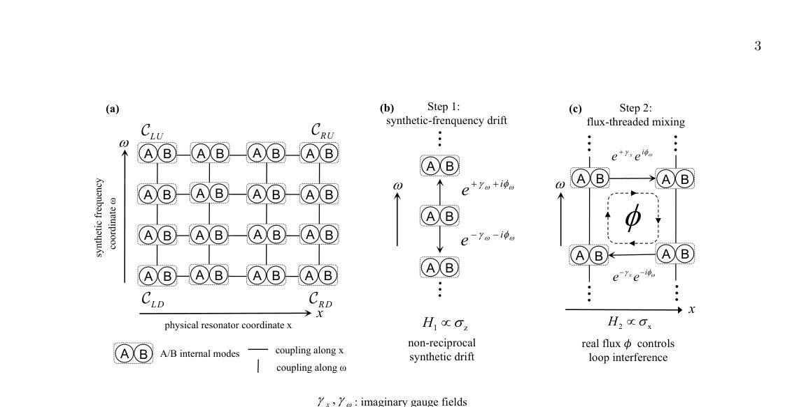
<figcaption class="paper-figure-caption"><b>Fig 1.</b> FIG. 1. Concept of the photonic physical-synthetic Floquet lattice and the two-step complex-gauge drive. Panel (a) shows the mode-space lattice. The horizontal direction is the physical resonator coordinate x, the vertical direction is the synthetic frequency coordinate w, and each site contains two internal optical modes A and B. The four corner windows CLD, CLU, CRD, and CRU are the local detection regions used for the doubled-period signal. Panel (b) shows the first half step, which implements a non-reciprocal synthetic-frequency drift proportional to σz; the upward and downward frequency-conversion amplitudes contain e+γw+iϕw and e−γw−iϕw, respectively. Panel (c) shows the second half...</figcaption>
</figure>
<figure class="paper-figure-card">
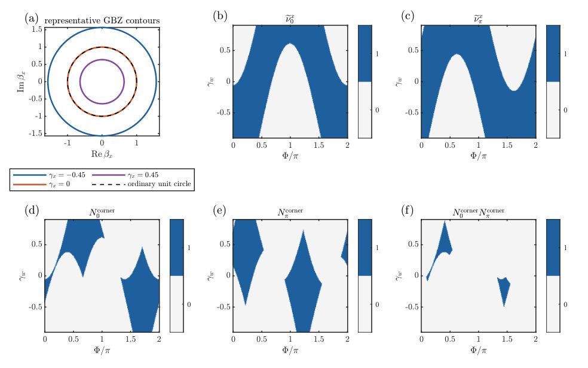
<figcaption class="paper-figure-caption"><b>Fig 2.</b> FIG. 2. Flux-resolved non-Bloch higher-order invariant. Panel (a) shows representative generalized Brillouin-zone contours for different γx, together with the ordinary unit circle as a dashed reference. Panel (b) shows the first-layer physical-edge index eνx 0 . Panel (c) shows the corresponding index eνx π. Panel (d) shows the corner index N corner 0 after including the synthetic-edge contribution. Panel (e) shows N corner π . Panel (f) shows the coexistence region N corner 0 N corner π = 1. These maps are topological predictions obtained from non-Bloch cycles, not from finite open-boundary diagonalization. Figure 3 tests these predictions by finite open-boundary spectra and shows the...</figcaption>
</figure>
<figure class="paper-figure-card">
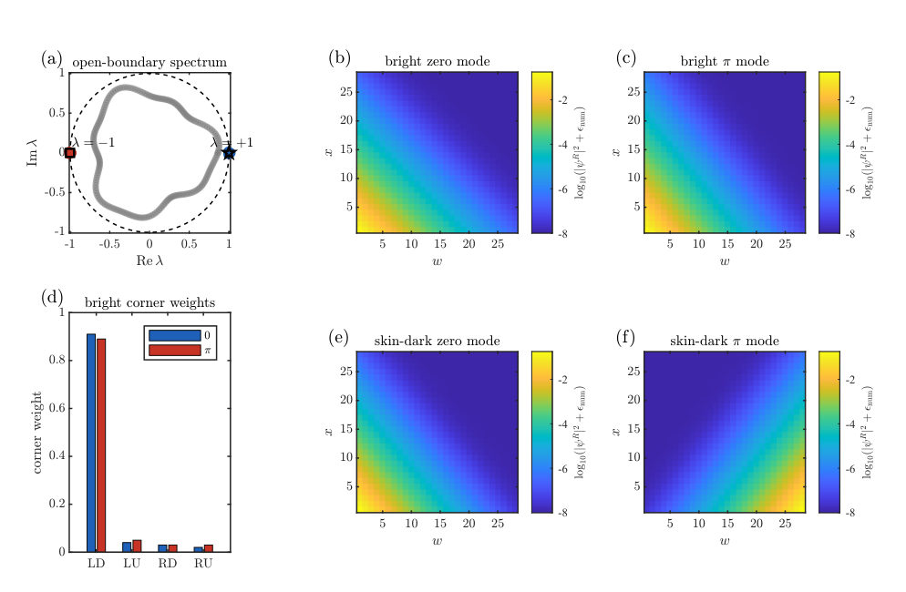
<figcaption class="paper-figure-caption"><b>Fig 3.</b> FIG. 3. Open-boundary spectrum and right-eigenmode profiles. Panel (a) shows the finite open-boundary spectrum in the complex multiplier plane. Gray points are bulk states. Blue and red markers identify corner candidates near λ = +1 and λ = −1. Panel (b) shows log10(|ψR 0 (x, w)|2 + ϵnum) in the bright regime. Panel (c) shows the corresponding π mode. Here ϵnum = 10−8. Panel (d) gives the four corner weights and confirms that the two modes occupy the same lower-left window. Panel (e) shows the zero mode at a skin-dark point. Panel (f) shows the π mode at the same point. Both modes still exist, but the imaginary gauge fields select different synthetic corners for their right eigenmodes. This...</figcaption>
</figure>
<figure class="paper-figure-card">
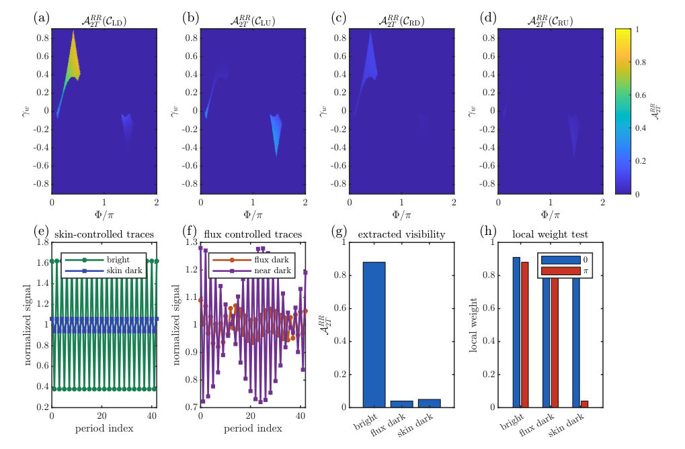
<figcaption class="paper-figure-caption"><b>Fig 4.</b> FIG. 4. Synthetic-flux and skin control of the doubled-period optical visibility. Panels (a)–(d) show ARR 2T (C) for CLD, CLU, CRD, and CRU, respectively, using a common color scale. Panels (e) and (f) compare discrete stroboscopic traces in the bright, skin-dark, flux-dark, and near-dark regimes. Panel (g) summarizes the extracted visibility at representative points. Panel (h) compares the corresponding local zero and π weights. Local weights are necessary but not sufficient for visibility. Flux darkness comes from interference cancellation, whereas skin darkness comes from spatial separation. Topological coexistence therefore does not imply local visibility.</figcaption>
</figure>
<figure class="paper-figure-card">
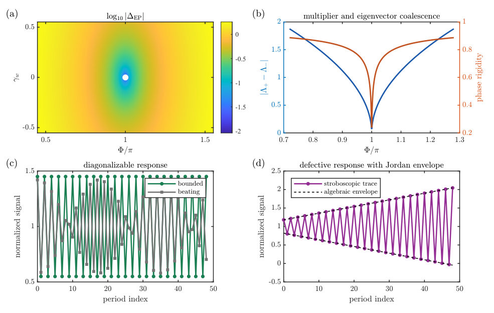
<figcaption class="paper-figure-caption"><b>Fig 5.</b> FIG. 5. Flux-tuned exceptional point and defective doubled-period response. Panel (a) shows log10 |∆EP|, where ∆EP = δ2 + gh. The white marker identifies the exceptional point. Panel (b) shows the two-period multiplier splitting and the phase rigidity across the exceptional point. Their simultaneous collapse diagnoses eigenvalue and eigenvector coalescence. Panel (c) compares bounded and beating responses away from the exceptional point. Panel (d) shows the defective response and its algebraic envelope at the exceptional point. The exceptional point is defined in the projected two-period corner propagator, not in the one-period 0/π spectrum. It does not create the 2T signal. It dresses an...</figcaption>
</figure>
</div>

<p><strong>Summary.</strong> The research investigates anomalous Floquet corner responses in a complex non-Hermitian photonic lattice by coupling physical and synthetic dimensions. It rigorously separates the concept of topological existence (predicted by winding numbers) from actual local optical visibility, showing three possible measurement regimes. Furthermore, it details how tuning parameters can induce an exceptional point, causing the response to adopt a unique algebraic envelope structure.</p>
<p><strong>Why it may be interesting.</strong> This work provides a sophisticated theoretical framework for understanding how non-Hermiticity, synthetic dimensions, and topological invariants govern measurable optical responses, offering concrete predictions about mode localization and spectral signatures that are distinct from simple existence criteria.</p>
<details>
<summary>Detailed structure</summary>
<p><strong>Main problem.</strong> The study aims to decouple topological existence from local optical visibility of anomalous Floquet corner responses in a non-Hermitian photonic lattice.</p>
<p><strong>Main result.</strong> The paper demonstrates that the same topological sector can exhibit three distinct measurement regimes (bright, skin-dark, or flux-dark), and furthermore, an exceptional point causes the response to acquire an algebraic envelope rather than simply being absent.</p>
<p><strong>Method.</strong> Theoretical analysis involving Floquet theory, non-Bloch winding number calculations, and constructing effective two-period propagators for corner subspace dynamics.</p>
<p><strong>Model / system.</strong> A non-Hermitian Floquet photonic lattice incorporating both a physical resonator coordinate and a synthetic frequency dimension. The system is controlled by complex gauge fields (real flux $\Phi$ and imaginary gauges $\gamma_{x,w}$).</p>
<p><strong>Key observables.</strong> Right-state corner visibility amplitude ($S_{RR}^C$), non-Bloch winding number ($N_{	ext{corner}}$), local mode weights ($W^{(\epsilon)}_C$), and the stroboscopic signal $A_{RR}^{2T}(C)$.</p>
<p><strong>Important parameters / regimes.</strong> Real synthetic magnetic flux ($\Phi$), imaginary gauge fields ($\gamma_x, \gamma_w$), and parameters governing the exceptional point ($\Delta_{	ext{EP}}$).</p>
<p><strong>Assumptions / limitations.</strong> The analysis relies on projecting dynamics onto a corner subspace and analyzing the effective two-period propagator matrix.</p>
<p><strong>Figures summary.</strong> Figures illustrate lattice structures, generalized Brillouin zone contours showing winding numbers, and time-domain traces comparing bright, skin-dark, and flux-dark regimes, culminating in visualizations of defective vs. diagonalizable responses near an exceptional point.</p>
<p><strong>Paper structure.</strong> The paper progresses from defining the physical model and its Hamiltonian structure to calculating topological invariants (winding numbers), then analyzing local measurement observables ($S_{RR}^C$), establishing the decoupling between topology and visibility, and finally investigating the role of exceptional points in modifying the time-domain response envelope.</p>
</details>
<details>
<summary>Abstract</summary>
<p>We propose a non-Hermitian Floquet photonic lattice formed by a physical resonator coordinate and a synthetic frequency coordinate. A two-step modulation protocol realizes a chiral walk in this physical-synthetic plane, with a real synthetic flux controlling loop interference and imaginary gauge fields controlling non-reciprocal envelopes. We show that anomalous corner pairs at quasienergies zero and \(π/T\) exhibit three distinct layers of physics. A non-Bloch higher-order construction predicts whether the \(0/π\) corner pair exists under open boundaries. The imaginary gauge fields select where the right eigenmodes accumulate. The real flux controls the local interference matrix element that determines whether the doubled-period optical response is visible. As a result, the same topological coexistence sector can be bright, skin-dark, or flux-dark in a local optical measurement. We further show that the complex gauge can tune an exceptional point of the two-period corner propagator. At this point the anomalous response keeps its doubled-period sign alternation, but its envelope becomes algebraic because of a Jordan block. These results provide a photonic route to separate topological existence, skin-selected localization, optical visibility, and defective two-period dynamics in a non-Hermitian synthetic dimension.</p>
</details>
<p><sub><a href="#top">↑ back to top</a></sub></p>

<p><a id="paper-2606.07221"></a></p>
<h3 id="long-range-interactions-assisted-shortcuts-to-adiabaticity-and-battery-charging-in-open-quantum-critical-systems"><a href="http://arxiv.org/abs/2606.07221v1">Long-range interactions assisted shortcuts to adiabaticity and battery charging in open quantum critical systems</a></h3>
<p><strong>Authors:</strong> Shishira Mahunta, Victor Mukherjee<br>
<strong>Type:</strong> theory · <strong>Category:</strong> statistical mechanics · <strong>PDF:</strong> <a href="https://arxiv.org/pdf/2606.07221v1">https://arxiv.org/pdf/2606.07221v1</a><br>
<strong>Analysis basis:</strong> full PDF text, analyzed in chunks
<strong>Topic relevance:</strong> 🔥 <code>correlated / nonlocal dissipation</code> <strong>4/5</strong> · <code>analog quantum simulation</code> <strong>3/5</strong> · <code>driven-dissipative phase transition</code> <strong>3/5</strong> · <code>methods for driven-dissipative</code> <strong>3/5</strong> · <code>non-equilibrium dynamics</code> <strong>3/5</strong> · <code>Keldysh / 2PI / non-Gaussian methods</code> <strong>2/5</strong> · <code>non-equilibrium universality</code> <strong>2/5</strong> · <code>Kondo &amp; dissipative impurity</code> <strong>1/5</strong> · <code>entanglement &amp; information structure</code> <strong>1/5</strong> · <code>exotic spin models in light-matter</code> <strong>1/5</strong> · <code>scars &amp; prethermalization</code> <strong>1/5</strong></p>
<div class="figure-strip-hint">↔ Scroll figures horizontally</div>
<div class="paper-figures-scroll">
<figure class="paper-figure-card">
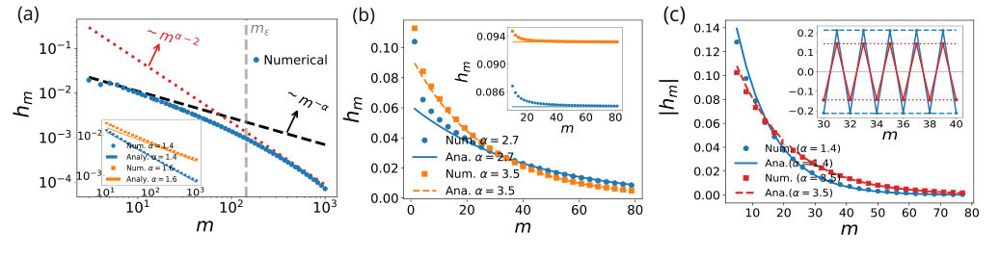
<figcaption class="paper-figure-caption"><b>Fig 1.</b> Figure 1. (a) Comparison between the numerically evaluated CD coupling hm(µ, α) and the analytical predictions in the long-range regime. The main panel shows the behavior close to criticality µ = −1 (ϵ−= 0.3, α = 1.4); the CD coupling exhibits a crossover from a detuned asymptotic decay described by Eq. (21) to a power-law behavior Eq. 22, controlled by the characteristic length scale mϵ = (Aα/|ϵ|)1/(α−1). The inset shows the critical scaling at ϵ−= 0 for α = 1.4 and α = 1.6 (see Eq. (23)). (b) Comparison between numerical and analytical results for the CD coupling in the short-range regime, showing exponentially localized behavior close criticality µ = −1 (see Eq. 24) (main panel) and the...</figcaption>
</figure>
<figure class="paper-figure-card">
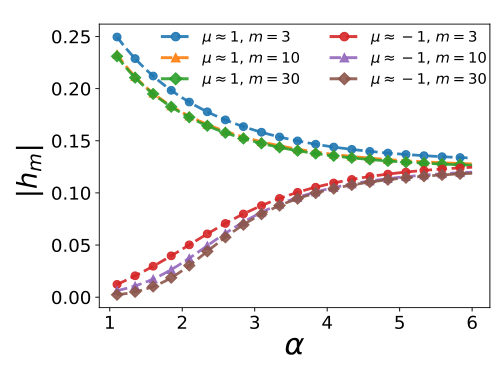
<figcaption class="paper-figure-caption"><b>Fig 2.</b> Figure 2. Dependence of hm(µ, α), obtained through numer- ical integration of Eq. (18), on the interaction exponent α near µ = ±1. Here ϵ± = 0.1.</figcaption>
</figure>
<figure class="paper-figure-card">
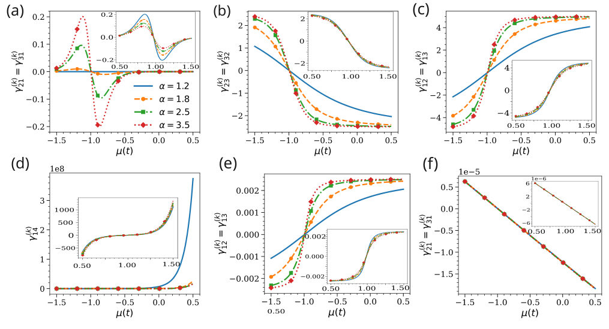
<figcaption class="paper-figure-caption"><b>Fig 3.</b> Figure 3. (a)–(d) Main panels show the transition rates γ(k) mn(t) as a function of the time-dependent chemical potential µ(t) driven across the critical point µ = −1, for k = 0.1). The insets display γ(k) mn(t) with µ(t) driven across the critical point µ = +1, for k = 3.0. Results are presented for different values of the LRI exponent α in low temperature regime β = 10. (e),(f) Same as above, but in the high-temperature regime β = 0.01.</figcaption>
</figure>
<figure class="paper-figure-card">

<figcaption class="paper-figure-caption"><b>Fig 4.</b> Figure 4. (a) Heat current ISTA in the low-temperature regime β = 10. (b) Heat current ISTA (main) and power PSTA (inset) in the high-temperature regime β = 0.1. (c) Power PSTA in the low-temperature regime β = 10.</figcaption>
</figure>
<figure class="paper-figure-card">

<figcaption class="paper-figure-caption"><b>Fig 5.</b> Figure 5. (a) Ergotropy W(t) with µ for different values of α at inverse temperature β = 1. The ergotropy increases with increasing range of interactions. (b) Variation of the ergotropy W(t) with µ for different values of β, for α = 1.2. Lower temperatures result in higher values of ergotropy.</figcaption>
</figure>
</div>

<p><strong>Summary.</strong> The paper demonstrates that long-range interactions are a valuable resource for controlling open quantum critical systems. By analyzing energy costs and ergotropy, the authors show that LRIs significantly enhance both Shortcuts to Adiabaticity implementation and the charging capability of quantum batteries compared to nearest-neighbor models.</p>
<p><strong>Why it may be interesting.</strong> This work bridges non-equilibrium thermodynamics, quantum control theory, and condensed matter physics by showing how interaction topology (long-range vs. short-range) dictates the feasibility and efficiency of advanced quantum protocols like STA.</p>
<details>
<summary>Detailed structure</summary>
<p><strong>Main problem.</strong> The study investigates how long-range interactions (LRIs) can enhance quantum control protocols, specifically Shortcuts to Adiabaticity (STA), in open quantum critical systems and improve the charging efficiency of quantum batteries under dissipation.</p>
<p><strong>Main result.</strong> LRIs provide a significant advantage over short-range interactions by reducing the cost of STA control and enhancing the resultant ergotropy during quantum battery charging near certain critical points.</p>
<p><strong>Method.</strong> The analysis involves deriving counterdiabatic Hamiltonians in momentum space, calculating energy costs (heat/power), and modeling dissipation using Lindblad master equations for open systems.</p>
<p><strong>Model / system.</strong> The model is a Long-Range Kitaev (LRK) chain of spinless fermions coupled to a fermionic bath. The dynamics are governed by the Hamiltonian $H_0(t)$ which includes long-range coupling terms decaying as $|i-j|^{-\alpha}$.</p>
<p><strong>Key observables.</strong> Heat current ($    ext{I}<em ext_STA="ext{STA">{    ext{STA}}$), power ($P</em>(t)$), and the counterdiabatic coupling strength ($h_m$).}}$), ergotropy ($W_{ ext{tot}</p>
<p><strong>Important parameters / regimes.</strong> Interaction decay exponent $\alpha$ (defining long-range vs. short-range regimes), critical points ($\mu = \pm 1$), and temperature/inverse temperature ($eta$).</p>
<p><strong>Assumptions / limitations.</strong> The system is coupled to a fermionic bath, leading to an instantaneous thermal state; calculations often rely on low-momentum expansions near criticality.</p>
<p><strong>Figures summary.</strong> Figures compare the analytical and numerical results for the CD coupling strength $h_m(\mu, \alpha)$ across different interaction regimes ($\alpha$) and critical points ($\mu=-1$ vs. $\mu=+1$).</p>
<p><strong>Paper structure.</strong> The paper systematically analyzes STA protocols in open systems, first deriving the necessary counterdiabatic terms ($h_m$), then calculating energy costs (heat/power), and finally applying these concepts to optimize quantum battery charging via ergotropy enhancement.</p>
</details>
<details>
<summary>Abstract</summary>
<p>In this work we show that long-range interactions can be significantly beneficial for implementing shortcuts to adiabaticity (STA) in many-body open quantum critical systems driven out of equilibrium, as well as for charging quantum batteries in the presence of dissipation. In sharp contrast to short range interactions where passage through criticality may demand STA control with non-zero interactions between infinitely distant spins, using the example of a Kitaev chain with long-range couplings, we find that the corresponding control may involve involve interaction strength with decays algebraically with distance. In case of non-unitary control, the advantage of long-range interactions manifest through reduction in the cost of STA. We further propose a modified STA technique aimed at charging a quantum battery in the presence of dissipation, in which case long-range interactions may enhance the resultant ergotropy. Our results establish long-range interactions as a valuable resource for quantum control, with direct implications for quantum technologies.</p>
</details>
<p><sub><a href="#top">↑ back to top</a></sub></p>

<p><a id="paper-2606.07268"></a></p>
<h3 id="modelling-time-irreversible-avalanches"><a href="http://arxiv.org/abs/2606.07268v1">Modelling time-irreversible avalanches</a></h3>
<p><strong>Authors:</strong> Andrea Baldassarri, Andrea Puglisi<br>
<strong>Type:</strong> theory · <strong>Category:</strong> statistical mechanics · <strong>PDF:</strong> <a href="https://arxiv.org/pdf/2606.07268v1">https://arxiv.org/pdf/2606.07268v1</a><br>
<strong>Analysis basis:</strong> full PDF text, analyzed in chunks
<strong>Topic relevance:</strong> 🔥 <code>non-equilibrium dynamics</code> <strong>4/5</strong> · 🔥 <code>non-equilibrium universality</code> <strong>4/5</strong> · <code>Frenkel-Kontorova</code> <strong>3/5</strong> · <code>Keldysh / 2PI / non-Gaussian methods</code> <strong>3/5</strong> · <code>driven-dissipative phase transition</code> <strong>3/5</strong> · <code>methods for driven-dissipative</code> <strong>3/5</strong> · <code>correlated / nonlocal dissipation</code> <strong>2/5</strong> · <code>Kondo &amp; dissipative impurity</code> <strong>1/5</strong></p>
<div class="figure-strip-hint">↔ Scroll figures horizontally</div>
<div class="paper-figures-scroll">
<figure class="paper-figure-card">

<figcaption class="paper-figure-caption"><b>Fig 1.</b> Figure 1. Given a stochastic signal, an avalanche (red, panel a) and a bridge (green, panel b) are identified. In panels c) and d) is depicted the definition of average shape: all the events (bridges in this case) of same duration τ are plotted in grey versus the internal time (which is zero at the start of the event): at each value of the internal time the average over the collected events gives the value of the average shape (blue line), resulting in a symmetric profile (example in panel c) or an asymmetric shape (example in panel d). The orange lines represents the reversed curve (t →τ −t) and it is plotted to manifest the asymmetry. Data in figures are from arbitrary stochastic...</figcaption>
</figure>
<figure class="paper-figure-card">

<figcaption class="paper-figure-caption"><b>Fig 2.</b> Figure 2. Average shapes for model (left) and granular experi- ment [40] (right). At left, the average bridge shapes computed from model in Eq. (5) are shown with increasing skewnesses (parameters: Tx = 0.1, Ty = 100, γx = 3, γy = 0.5, u = 1). In the legend the corresponding durations. At right, aver- age avalanche shapes from granular experiments with similar skewness (each curve is obtained averaging in a bracket of du- rations, as indicated in the legend) are quite similar with the scenario produced by the model.</figcaption>
</figure>
<figure class="paper-figure-card">

<figcaption class="paper-figure-caption"><b>Fig 3.</b> Figure 3. Analysis of average shape skewness versus dura- tion. In panel a) results from the model (same parameters as Fig. 2): red line is the theory for average bridge shapes, black points for average avalanche shapes (numerical). In panel b) the average skewness for average avalanche shapes versus their durations from granular experiment. In the insets the corresponding distributions of avalanche duration is shown for comparison.</figcaption>
</figure>
<figure class="paper-figure-card">

<figcaption class="paper-figure-caption"><b>Fig 4.</b> Figure 4. Maximal skewness of the shape observed as a func- tion of an estimation of the average entropy produced dur- ing the corresponding bridge. Points refers to more than 100000 different (random log-uniformly distributed) choices of parameters. The dashed line is a simple analytical expres- sion describing qualitatively the case (γx −γy)(Tx −Ty) ≤0. Crosses represent two systems with the same drift parameters γx, γy, and u, but temperatures swapped Tx ↔Ty (more de- tails in End Material).</figcaption>
</figure>
<figure class="paper-figure-card">

<figcaption class="paper-figure-caption"><b>Fig 5.</b> Figure 5. Comparison of normalized average shapes for bridges (analytical) in red, and avalanche (numerical) in black. Param- eters: γx = γy = 1, u = 0.5, Tx = 0.125, Ty = 12.5. Only intermediate durations are shown: at smaller and larger durations, the shapes are still indistinguishable and more symmetric, with respectively parabolic and flattening shapes.</figcaption>
</figure>
</div>

<p><strong>Summary.</strong> This paper develops a theoretical model based on the Brownian Gyrator to study time-irreversible fluctuations observed in phenomena like friction and magnetic avalanches. By analyzing the average shape of these 'avalanches,' the authors quantify the degree of asymmetry. They establish a quantitative link between this measured asymmetry (skewness) and the rate of entropy production, providing a powerful diagnostic tool for non-equilibrium physics.</p>
<p><strong>Why it may be interesting.</strong> It provides a rigorous statistical mechanical framework for quantifying non-equilibrium signatures (like time-asymmetry) in complex physical processes, linking microscopic dynamics to macroscopic irreversibility measures.</p>
<details>
<summary>Detailed structure</summary>
<p><strong>Main problem.</strong> The study investigates the time reversal symmetry of fluctuations, particularly by analyzing the average shape of avalanches in non-equilibrium systems.</p>
<p><strong>Main result.</strong> The proposed Brownian Gyrator model successfully reproduces experimentally observed asymmetric average avalanche shapes, correlating this asymmetry with measures of entropy production rates.</p>
<p><strong>Method.</strong> The authors use analytical extensions to paradigmatic models (like ABBM) and compute average bridge/avalanche shapes using propagator techniques in stochastic thermodynamics.</p>
<p><strong>Model / system.</strong> The core model is an extension of the ABBM model, related to the Brownian Gyrator, which describes motion under anisotropic thermal fluctuations. It can be framed within rate-and-state friction models.</p>
<p><strong>Key observables.</strong> Average avalanche/bridge shape $\langle v(t) 
angle_	au$, asymmetry (skewness), and entropy production rates ($S_{	ext{prod}}$).</p>
<p><strong>Important parameters / regimes.</strong> Anisotropy parameters ($\gamma_x, \gamma_y$), bath temperatures ($T_x, T_y$), and the duration of the avalanche/bridge ($   au$).</p>
<p><strong>Assumptions / limitations.</strong> The analysis relies on extending known models to capture non-equilibrium features; numerical methods require careful handling of noise terms and integration steps.</p>
<p><strong>Figures summary.</strong> Figures compare model predictions (e.g., average bridge shapes vs. duration $  au$) against granular friction experiments, showing characteristic time-reversal asymmetry and correlating maximal skewness with entropy production.</p>
<p><strong>Paper structure.</strong> The paper develops the theoretical framework by generalizing existing models to include anisotropy, deriving equations of motion for the generalized process, calculating the average shape using propagators, and finally correlating the resulting asymmetry (skewness) with thermodynamic quantities like entropy production.</p>
</details>
<details>
<summary>Abstract</summary>
<p>We investigate the problem of the time reversal symmetry of fluctuations, as witnessed by the average shape of avalanches. This quantity has been measured in a variety of systems, ranging from magnetic materials to earthquakes. Although an asymmetric shape is often observed, which is a signature of a non-equilibrium dynamics, there is no general theoretical control of this feature. In this paper, we propose a non equilibrium extension of a paradigmatic model for ``crackling-noise'', the so called ABBM model. Our model is strictly related to the Brownian Gyrator, which has been previously introduced in stochastic thermodynamics as the simplest model for thermal anisotropy, but it can also be framed in the context of rate-and-state models. It reproduces the phenomenology observed in experiments on granular friction, and allows for a systematic theoretical study of the asymmetry. We manage to correlate a measure of asymmetry, that can be easily computed in experiments, with the entropy production rates of the dynamics.</p>
</details>
<p><sub><a href="#top">↑ back to top</a></sub></p>

<p><a id="paper-2606.06798"></a></p>
<h3 id="machine-learning-optimization-and-characterization-of-a-high-optical-depth-two-color-nanofiber-trap"><a href="http://arxiv.org/abs/2606.06798v1">Machine-Learning Optimization and Characterization of a High-Optical-Depth Two-Color Nanofiber Trap</a></h3>
<p><strong>Authors:</strong> W. Crump, M. Sadeghi, M. D. Hoogerland<br>
<strong>Type:</strong> experiment · <strong>Category:</strong> other · <strong>PDF:</strong> <a href="https://arxiv.org/pdf/2606.06798v1">https://arxiv.org/pdf/2606.06798v1</a><br>
<strong>Analysis basis:</strong> full PDF text, analyzed in chunks
<strong>Topic relevance:</strong> 🔥 <code>quantum optics experiment</code> <strong>4/5</strong> · <code>analog quantum simulation</code> <strong>3/5</strong> · <code>correlated cavity matter</code> <strong>3/5</strong> · <code>QC/QI experiment</code> <strong>2/5</strong> · <code>methods for driven-dissipative</code> <strong>2/5</strong> · <code>quantum measurements</code> <strong>2/5</strong> · <code>Tavis-Cummings &amp; cavity-many-emitter</code> <strong>1/5</strong> · <code>driven-dissipative phase transition</code> <strong>1/5</strong> · <code>entanglement &amp; information structure</code> <strong>1/5</strong> · <code>interference shaping light</code> <strong>1/5</strong> · <code>non-equilibrium dynamics</code> <strong>1/5</strong></p>
<div class="figure-strip-hint">↔ Scroll figures horizontally</div>
<div class="paper-figures-scroll">
<figure class="paper-figure-card">

<figcaption class="paper-figure-caption"><b>Fig 1.</b> FIG. 1. (Top) Configuration of dipole trap lasers through the optical nanofiber as well as measurement probe with the SPCM. (Bottom Left) Contributions to the potential energy from 685 nm laser (blue), 937 nm lasers (red), Van der Waals potential (green) and their sum (black) for a slice at y = 0 and z = 0 along the x direction showing a trap depth of roughly 105 uK at a distance of around 350 nm from the fiber surface. A slice along the y direction is also shown (grey). (Bottom Middle) Potential energy landscape in the x-y plane calcu- lated using powers and polarizations from the experiment. (Bottom Right) Potential energy landscape in the x-z plane calculated using powers and...</figcaption>
</figure>
<figure class="paper-figure-card">

<figcaption class="paper-figure-caption"><b>Fig 2.</b> FIG. 2. (Top) Cooling sequence used in the experiment. The dots show values which where adjusted by the machine learning algo- rithm, as were the compression ramp time t1 and the PGC cooling time t2. (Bottom Left) Cost vs run number for an example machine learning session. The cost values are distinguished by whether the test parameters used were produced by the differential evolution al- gorithm or the neural net model. (Bottom Right) Cost vs Control voltage for three parameters varied during a machine learning ses- sion. These were the X, Y and Z Helmholtz magnetic fields at the beginning of the compression cooling step. Darker colors indicate values that were produced by the neural net...</figcaption>
</figure>
<figure class="paper-figure-card">

<figcaption class="paper-figure-caption"><b>Fig 3.</b> FIG. 3. (Left) Transmission measurement through the fiber with atoms in the two-color trap. The fit is using equation 1 for the opti- cal density. (Right) Lifetime measurement of the atoms in the trap. Derived from optical density measurements for a range of times after turning off the cooling lasers.</figcaption>
</figure>
<figure class="paper-figure-card">

<figcaption class="paper-figure-caption"><b>Fig 4.</b> FIG. 4. (Left) Transmission measurement on resonance through the fiber. (Right) Fitted optical density vs number of photons into the trap. The fit is exponential and decay constant is an average number of photons 2120 ± 60.</figcaption>
</figure>
</div>

<p><strong>Summary.</strong> The authors report an experimental realization of a two-color dipole trap using optical nanofibers to confine cold atoms near the fiber surface. They utilized machine learning to optimize the trapping process, achieving high optical densities and estimating $\sim 1400$ trapped atoms. The key finding is that while strong coupling is achieved, the measured lifetime is limited by technical noise rather than fundamental quantum processes.</p>
<p><strong>Why it may be interesting.</strong> This work is highly relevant as it pushes the boundaries of atom-photon interfaces by demonstrating high coupling strengths (high OD) in a shallow trap regime. The combination of ML optimization with precise quantum characterization makes it a model for advanced open quantum system experiments.</p>
<details>
<summary>Detailed structure</summary>
<p><strong>Main problem.</strong> The goal was to create a robust, high optical-depth nanofiber trap for coupling quantum information from cold atoms over long distances.</p>
<p><strong>Main result.</strong> The experiment successfully achieved an optical depth exceeding 15 and trapped approximately 1400 Cesium atoms with a measurable lifetime of 28 ms. The study concluded that technical noise, rather than fundamental processes, limits the atom loss rate.</p>
<p><strong>Method.</strong> The researchers employed machine learning optimization on the cooling sequence parameters and used transmission spectroscopy to characterize the optical depth and trap lifetime.</p>
<p><strong>Model / system.</strong> The physical system is a two-color evanescent-field dipole trap using Cesium atoms near an optical nanofiber. The trapping mechanism combines blue-detuned (repulsive) and red-detuned (attractive) fields, creating a 1D lattice of trapping sites.</p>
<p><strong>Key observables.</strong> Peak optical depth ($\approx 15.1$), estimated atom number ($\approx 1400$), collective cooperativity ($\approx 28$), and trap lifetime ($28 	ext{ ms}$).</p>
<p><strong>Important parameters / regimes.</strong> Trap depths ($\sim 100 \mu	ext{K}$), cooling detunings (up to $22 	ext{ MHz}$), and the characteristic loss rate dominated by technical noise.</p>
<p><strong>Assumptions / limitations.</strong> The primary limitation on lifetime is attributed to technical noise, not intrinsic recoil or vacuum processes. The calculation of single-atom optical depth might overestimate the true value due to wavefunction spreading.</p>
<p><strong>Figures summary.</strong> Figure 1 illustrates the laser configuration and calculated potential energy landscapes. Figure 4 shows transmission measurements on resonance (left) and the exponential decay of optical depth versus absorbed probe photons (right).</p>
<p><strong>Paper structure.</strong> The paper details the setup using a two-color dipole trap, describes the use of machine learning to optimize the cooling sequence parameters, presents characterization results like high optical depth measurement, and finally analyzes the lifetime decay to determine the limiting loss mechanism.</p>
</details>
<details>
<summary>Abstract</summary>
<p>Optical nanofibers provide a way of coupling quantum information in cold atoms across large distances, however, this coupling requires atoms to reside close to the nanofiber surface. Atoms can be trapped close to the surface using a two-color dipole trap. Here we present our experimental realization of a two-color dipole trap. We optimize the number of trapped atoms using a machine learning algorithm and measure the optical density via the transmission. We estimate the number of atoms in the trap to be approximately 1400 and the lifetime of the atoms in the trap to be 28 ms. Machine-learning optimization improved the on-resonance optical depth from 0.5 in the initial optimization stage to optical depths exceeding 15.</p>
</details>
<p><sub><a href="#top">↑ back to top</a></sub></p>

<p><a id="paper-2606.07168"></a></p>
<h3 id="continuous-time-quantum-control-across-an-exponentially-small-bottleneck-in-a-frustrated-ising-ring-model"><a href="http://arxiv.org/abs/2606.07168v1">Continuous-time quantum control across an exponentially small bottleneck in a frustrated Ising ring model</a></h3>
<p><strong>Authors:</strong> Vincenzo Roberto Arezzo, Kiran Thengil, Giuseppe Santoro<br>
<strong>Type:</strong> theory · <strong>Category:</strong> disordered systems and neural networks · <strong>PDF:</strong> <a href="https://arxiv.org/pdf/2606.07168v1">https://arxiv.org/pdf/2606.07168v1</a><br>
<strong>Analysis basis:</strong> full PDF text, analyzed in chunks
<strong>Topic relevance:</strong> 🔥 <code>analog quantum simulation</code> <strong>4/5</strong> · <code>exotic spin models in light-matter</code> <strong>3/5</strong> · <code>non-equilibrium dynamics</code> <strong>3/5</strong> · <code>methods for driven-dissipative</code> <strong>2/5</strong> · <code>non-equilibrium universality</code> <strong>2/5</strong> · <code>Keldysh / 2PI / non-Gaussian methods</code> <strong>1/5</strong> · <code>driven-dissipative phase transition</code> <strong>1/5</strong> · <code>entanglement &amp; information structure</code> <strong>1/5</strong> · <code>quantum measurements</code> <strong>1/5</strong></p>
<div class="figure-strip-hint">↔ Scroll figures horizontally</div>
<div class="paper-figures-scroll">
<figure class="paper-figure-card">

<figcaption class="paper-figure-caption"><b>Fig 1.</b> FIG. 1: The Ising frustrated ring model with an odd number of sites N. The model has a reflection symmetry around the axis indicated by the dashed blue line.</figcaption>
</figure>
<figure class="paper-figure-card">

<figcaption class="paper-figure-caption"><b>Fig 2.</b> FIG. 2: Comparison between optimized continuous-time residual energies and fixed-schedule results for N = 13, Jf = 0.45 (a,c), and N = 35, Jf = 0.45 (b,d). Panels (a) and (b) show the geometric mean of the optimized residual energies ¯ϵP(τ) over Nrun = 10 independent dressed-CRAB runs. The shaded regions indicate one logarithmic standard deviation. Panels (c) and (d) show representative optimized schedules sopt(t) for the case Nc = 20, and several values of τ.</figcaption>
</figure>
<figure class="paper-figure-card">

<figcaption class="paper-figure-caption"><b>Fig 3.</b> FIG. 3: Threshold annealing time τ ∗extracted from the con- dition ¯ϵP(τ) &lt; ϵthreshold = 10−6, as a function of the system size N. For each N, we scan the annealing time τ in steps of ∆τ = 1 and define τ ∗as the smallest scanned value of τ for which the geometric mean of the optimized residual en- ergy satisfies ¯ϵP(τ) &lt; ϵthreshold. The data are shown in log-log scale. The dashed line is a linear-scaling guide to the eye, τ ∗∝N, normalized using the largest system size. The com- parison suggests that, in the range of sizes explored here, the threshold time τ ∗is compatible with a linear scaling with N. All data are obtained with the default two-iteration dressed- CRAB setup described in...</figcaption>
</figure>
<figure class="paper-figure-card">

<figcaption class="paper-figure-caption"><b>Fig 4.</b> FIG. 4: Populations of the low-lying instantaneous eigenstates during the optimized dynamics for two system sizes: N = 13 at τ = 60 (panel (a)) and N = 35 at τ = 120 (panel (b)). All data are obtained with the default two-iteration dressed-CRAB setup described in Sec. III. Notice the abrupt final population transfer for values of t/τ close to the bottleneck value of sb ≈0.9. The final ground-state infidelities are 1 −p0(τ) ≃3.8 × 10−8 for N = 13 and 1 −p0(τ) ≃9.6 × 10−7 for N = 35.</figcaption>
</figure>
<figure class="paper-figure-card">

<figcaption class="paper-figure-caption"><b>Fig 5.</b> FIG. 5: Comparison of the optimized residual energies obtained with the standard and counter-diabatic protocols, together with the results for fixed linear, cubic, and sinusoidal schedules. The data refer to Jf = 0.2501 and N = 17 in panels (a,c), and to Jf = 0.2501 and N = 33 in panels (b,d). The residual-energy points show the geometric mean ¯ϵP(τ) over Nrun = 10 independent dressed-CRAB runs, while the shaded regions indicate one logarithmic standard deviation. The bottom panels compare the optimized schedules for τ = 80 and show the corresponding profile of α(s) ˙s(t) entering the counter-diabatic correction. Both the standard and counter-diabatic schedules are optimized using the same...</figcaption>
</figure>
</div>

<p><strong>Summary.</strong> This paper develops advanced quantum control techniques to prepare the ground state of a frustrated Ising ring model, which typically suffers from exponentially small energy gaps. By optimizing the annealing schedule continuously rather than using fixed ramps, the authors demonstrate that the required computation time scales only linearly with system size. This provides a significant theoretical breakthrough for simulating complex many-body systems trapped by spectral bottlenecks.</p>
<p><strong>Why it may be interesting.</strong> This work directly addresses fundamental limitations in quantum simulation algorithms by providing a concrete method to achieve polynomial scaling for ground state preparation in systems with known spectral bottlenecks.</p>
<details>
<summary>Detailed structure</summary>
<p><strong>Main problem.</strong> The primary challenge is overcoming exponentially long annealing times required by standard Quantum Annealing (QA) when the system encounters an exponentially small spectral gap bottleneck.</p>
<p><strong>Main result.</strong> By optimizing continuous-time control schedules, the required annealing time scales linearly with system size rather than exponentially, successfully bypassing the bottleneck mechanism.</p>
<p><strong>Method.</strong> The authors use quantum optimal control theory to optimize smooth, continuous-time annealing schedules using a dressed-CRAB approach and gradient optimization techniques.</p>
<p><strong>Model / system.</strong> The study focuses on a frustrated Ising ring model, whose dynamics are governed by an interpolating Hamiltonian between a driving field ($\hat{H}_x$) and the target problem ($\hat{H}_z$).</p>
<p><strong>Key observables.</strong> Residual energy ($\epsilon$), threshold annealing time ($ au^*$), and population distributions across instantaneous eigenstates.</p>
<p><strong>Important parameters / regimes.</strong> System size ($N$), minimum spectral gap ($\Delta_{\min}$), and the optimization schedule parameters (Fourier coefficients).</p>
<p><strong>Assumptions / limitations.</strong> The analysis relies on optimizing smooth, continuous-time schedules; counter-diabatic corrections are analyzed but found not to improve results beyond optimal scheduling.</p>
<p><strong>Figures summary.</strong> Figures illustrate the frustrated Ising ring structure, show population dynamics near bottlenecks, and compare residual energies for optimized vs. fixed annealing schedules across varying system sizes.</p>
<p><strong>Paper structure.</strong> The paper introduces the QA problem on the frustrated Ising ring, details the continuous-time control optimization using dressed-CRAB, analyzes the resulting nonadiabatic dynamics (population transfer), compares performance against standard ramps, and finally examines the role of counter-diabatic corrections.</p>
</details>
<details>
<summary>Abstract</summary>
<p>Continuous-time Quantum Annealing (QA) is a strategy for preparing the ground state of nontrivial many-body systems. In its standard form, the dynamics is generated by a time-dependent interpolation between a simple driving Hamiltonian and the target problem Hamiltonian, usually implemented through a linear schedule. This approach faces the crucial bottleneck of small spectral gaps, which may require exponentially long annealing times to ensure adiabaticity. Here, we show how to implement quantum control over the annealing schedule in a frustrated Ising ring, one of the simplest models exhibiting an exponentially small bottleneck gap. By optimizing smooth continuous-time annealing schedules with a dressed-CRAB approach, and using a digitized representation of the dynamics to efficiently evaluate gradients, we construct protocols that strongly outperform standard fixed schedules. The optimized dynamics bypasses the bottleneck through a strongly nonadiabatic mechanism, leading to efficient ground-state preparation despite the exponentially small minimum gap. In particular, the annealing time required to reach a fixed residual-energy threshold is found to grow linearly with system size rather than exponentially. We further examine a lowest-order variational counter-diabatic correction and find that, once schedule optimization is allowed, it does not lead to any improvement.</p>
</details>
<p><sub><a href="#top">↑ back to top</a></sub></p>

<p><a id="paper-2606.07266"></a></p>
<h3 id="vortex-dynamics-in-rotating-dipolar-supersolids-across-josephson-and-self-trapping-regimes"><a href="http://arxiv.org/abs/2606.07266v1">Vortex dynamics in rotating dipolar supersolids across Josephson and self-trapping regimes</a></h3>
<p><strong>Authors:</strong> Aitor Alaña, Michele Modugno, Pablo Capuzzi<br>
<strong>Type:</strong> theory · <strong>Category:</strong> quantum gases · <strong>PDF:</strong> <a href="https://arxiv.org/pdf/2606.07266v1">https://arxiv.org/pdf/2606.07266v1</a><br>
<strong>Analysis basis:</strong> full PDF text, analyzed in chunks
<strong>Topic relevance:</strong> 🔥 <code>analog quantum simulation</code> <strong>4/5</strong> · <code>methods for driven-dissipative</code> <strong>3/5</strong> · <code>non-equilibrium dynamics</code> <strong>3/5</strong> · <code>driven-dissipative phase transition</code> <strong>2/5</strong> · <code>non-equilibrium universality</code> <strong>2/5</strong> · <code>Frenkel-Kontorova</code> <strong>1/5</strong> · <code>Keldysh / 2PI / non-Gaussian methods</code> <strong>1/5</strong> · <code>correlated / nonlocal dissipation</code> <strong>1/5</strong> · <code>entanglement &amp; information structure</code> <strong>1/5</strong></p>
<div class="figure-strip-hint">↔ Scroll figures horizontally</div>
<div class="paper-figures-scroll">
<figure class="paper-figure-card">

<figcaption class="paper-figure-caption"><b>Fig 1.</b> FIG. 2. Schematic depiction of the stirring protocol. We start with a stationary self-sustained supersolid with a su- perimposed egg-box potential. This potential is then rotated at a linearly increasing speed during 100 ms. Following this, the potential is gradually turned off over a period of 10 ms. Once the egg-box potential has been completely removed, the supersolid rotates freely due to the angular momentum trans- ferred by the rotating potential.</figcaption>
</figure>
<figure class="paper-figure-card">

<figcaption class="paper-figure-caption"><b>Fig 2.</b> FIG. 1. Schematic view of the system under study. A super- solid with a central droplet and a ring of six smaller droplets, arranged in a triangular lattice. The low-density nucleation and transport paths are highlighted in solid green and dashed orange, respectively. Vortices (blue dots) can enter through nucleation, remaining there or moving to a nucleation path. In the case of self-trapping, vortex-antivortex pairs can ap- pear, in which case the vortex and the antivortex (dark red dot) will move in opposite directions until they collide with their opposite and annihilate.</figcaption>
</figure>
<figure class="paper-figure-card">

<figcaption class="paper-figure-caption"><b>Fig 3.</b> FIG. 3. Column densities ρ(x, y) (normalized to unity, top row, panels (a)-(c)) and wave function phases at z = 0, arg ψ(x, y, z = 0) (bottom row, panels (d)-(f)) of a rotating supersolid following the rotation ramp-up and a self-trapping dynamics. The dashed lines mark the density contour at ρ = ρmax/100 chosen to visualize the droplets cores, while the blue and red points mark vortices and antivortices, respectively. The actual saddle-point column density between neighboring droplets is ρ/ρmax ≃10−5 and the superfluid fraction is approximately 7%. The left, middle, and right columns correspond to times t = 70, 76, 84 ms, respectively.</figcaption>
</figure>
<figure class="paper-figure-card">

<figcaption class="paper-figure-caption"><b>Fig 4.</b> FIG. 4. (a) Vortex nucleation Yn as a function of time, fol- lowing the stirring procedure in Fig. 2, for Ω/2π = 20 Hz and Zi ≃0.59. The eGPE results are indicated with blue circles, and the two-droplet approximation with a solid green line. The error bars correspond to the spatial discretization in the numerical simulation, while the colored band around the two-droplet approximation marks a 5% uncertainty stem- ming from the determination of d and Ωfrom the spatial discretization and averaging over the six ring droplets. The dotted lines mark the position of the hexagon vertices. The inset illustrates schematically the geometry of the droplets and the involved path Yn. (b) Evolution of the...</figcaption>
</figure>
<figure class="paper-figure-card">

<figcaption class="paper-figure-caption"><b>Fig 5.</b> FIG. 6. Vortex oscillations in the xy plane for the sim- ulation of Fig. 5. Panel (a) depicts the vortex positions at different times during the dynamics according to the eGPE (blue dots) and three-droplet approximation (green triangles) around two vertices, with the background colors depicting the corresponding densities at t = 110 ms. Panels (b)-(d) show the position of the vortex that has been nucleated along the y &gt; 0 axis up to the vertex, at selected observation times t = 134, 155, 176 ms, calculated using the three-droplet ap- proximation, with the background colors corresponding to the wave function phase.</figcaption>
</figure>
</div>

<p><strong>Summary.</strong> The paper explores how vortices behave in rotating dipolar supersolids by modeling the system as weakly linked condensates. It demonstrates that combining Josephson oscillation physics with self-trapping dynamics offers a powerful, tunable protocol to precisely trigger and track vortex nucleation, transport, and pair annihilation events within the lattice structure.</p>
<p><strong>Why it may be interesting.</strong> This work provides a detailed, controllable mechanism to study fundamental quantum phenomena like phase slips and vortex dynamics using ultracold atomic systems, which is highly relevant to understanding superfluidity in complex geometries.</p>
<details>
<summary>Detailed structure</summary>
<p><strong>Main problem.</strong> The study investigates vortex nucleation and transport dynamics within a rotating dipolar supersolid across distinct physical regimes: Josephson oscillations and macroscopic self-trapping.</p>
<p><strong>Main result.</strong> Local phase differences provide a predictive framework, showing that combining Josephson and self-trapping protocols allows for tunable control over triggering vortex nucleation, tracking transport, and observing pair annihilation mechanisms.</p>
<p><strong>Method.</strong> The dynamics are modeled by analyzing the system as an array of weakly linked condensates, using local phase differences ($\varphi$) and population imbalances ($Z$) derived from the extended Gross-Pitaevskii equation (eGPE).</p>
<p><strong>Model / system.</strong> The physical system is a dipolar Bose gas forming a supersolid arranged in a triangular droplet lattice. The theoretical framework utilizes the eGPE, incorporating dipole-dipole interactions and Lee-Huang-Yang corrections.</p>
<p><strong>Key observables.</strong> Vortex position ($Y_n, Y_t$), phase differences ($\varphi$), population imbalance ($Z$), vortex/antivortex pair creation/annihilation events.</p>
<p><strong>Important parameters / regimes.</strong> Rotation frequency ($\Omega$), Josephson regime vs. Self-Trapping (ST) regime transitions, and the necessity of a three-droplet description near lattice vertices.</p>
<p><strong>Assumptions / limitations.</strong> The analysis relies on approximating the system using local phase differences between neighboring droplets; specifically, the two-droplet approximation fails near hexagon vertices, necessitating a three-droplet model for accuracy.</p>
<p><strong>Figures summary.</strong> Figures schematically illustrate the triangular lattice structure and paths for vortex nucleation (solid green) and transport (dashed orange). Later figures compare eGPE simulations with approximations, highlighting pair creation/annihilation events during rotation ramps.</p>
<p><strong>Paper structure.</strong> The paper establishes the physical model (dipolar supersolid in a droplet lattice), develops theoretical tools based on local phase differences, analyzes dynamics separately in Josephson and Self-Trapping regimes, and culminates by showing how combining these two protocols allows for comprehensive control over topological vortex events.</p>
</details>
<details>
<summary>Abstract</summary>
<p>We investigate vortex nucleation and transport in a rotating dipolar supersolid arranged in a triangular droplet lattice, exploiting its description as an array of weakly linked condensates. By considering both Josephson and macroscopic self-trapping dynamics, we show that local phase differences between droplets provide a compact and highly predictive framework to explore a wide range of vortex behaviors. In particular, Josephson oscillations can be devised to induce vortex nucleation and motion near the vertices of the low-density hexagonal lattice (between droplets), while self-trapping dynamics induce running phases that enable directed vortex transport, which may be accompanied by vortex-antivortex pair creation and annihilation over finite time scales. Comparison with simulations based on the extended Gross-Pitaevskii equation demonstrates that a three-droplet description is essential to capture vortex motion near hexagon vertices. Together, Josephson and self-trapping dynamics provide a tunable protocol to trigger and track vortex nucleation, transport, and vortex-antivortex pair annihilation, revealing the microscopic topological mechanisms underlying phase slips in rotating dipolar supersolids.</p>
</details>
<p><sub><a href="#top">↑ back to top</a></sub></p>

<p><a id="paper-2606.06810"></a></p>
<h3 id="cyclic-ladder-operators-and-hidden-weyl-heisenberg-structure-in-a-floquet-system"><a href="http://arxiv.org/abs/2606.06810v1">Cyclic ladder operators and hidden Weyl-Heisenberg structure in a Floquet system</a></h3>
<p><strong>Authors:</strong> Tianao Wu, Li Ge<br>
<strong>Type:</strong> theory · <strong>Category:</strong> other · <strong>PDF:</strong> <a href="https://arxiv.org/pdf/2606.06810v1">https://arxiv.org/pdf/2606.06810v1</a><br>
<strong>Analysis basis:</strong> full PDF text, analyzed in chunks
<strong>Topic relevance:</strong> 🔥 <code>analog quantum simulation</code> <strong>4/5</strong> · <code>non-equilibrium dynamics</code> <strong>3/5</strong> · <code>driven-dissipative phase transition</code> <strong>2/5</strong> · <code>methods for driven-dissipative</code> <strong>2/5</strong> · <code>non-equilibrium universality</code> <strong>2/5</strong> · <code>Frenkel-Kontorova</code> <strong>1/5</strong> · <code>Keldysh / 2PI / non-Gaussian methods</code> <strong>1/5</strong> · <code>entanglement &amp; information structure</code> <strong>1/5</strong></p>
<div class="figure-strip-hint">↔ Scroll figures horizontally</div>
<div class="paper-figures-scroll">
<figure class="paper-figure-card">

<figcaption class="paper-figure-caption"><b>Fig 1.</b> FIG. 1. (a) Schematics of a one-dimensional Floquet system with temporal period T and spatial period Λ. Couplings are marked by bars, and one unit cell is boxed by the dashed line. Sublattices A and B are marked by filled and open dots. (b-d) Band structure of the Floquet system with g = 1 and T/π = 0.9, 1, 1.1, respectively. The first Floquet BZ is darkened.</figcaption>
</figure>
</div>

<p><strong>Summary.</strong> This theoretical paper explores cyclic ladder operators in finite quantum systems, showing that if these systems obey a Weyl-Heisenberg commutation relation, their energy spectrum must be equally spaced. This principle is rigorously demonstrated using a one-dimensional Floquet lattice model, revealing a deep algebraic connection between the system's time evolution and its underlying discrete symmetries.</p>
<p><strong>Why it may be interesting.</strong> This work provides deep connections between discrete spectral properties (equally spaced ladders) and fundamental algebraic structures (WH group), offering insights into the underlying symmetries governing dynamics in periodically driven quantum systems relevant to AMO physics.</p>
<details>
<summary>Detailed structure</summary>
<p><strong>Main problem.</strong> The paper investigates cyclic ladder operators in finite-dimensional quantum systems, particularly exploring how an underlying Weyl-Heisenberg (WH) commutation relation dictates the energy spectrum and dynamics.</p>
<p><strong>Main result.</strong> It demonstrates that the existence of a WH structure forces the system to possess an equally spaced energy ladder, which is confirmed by showing the temporal evolution operator relates directly to the cyclic ladder operators in specific limits.</p>
<p><strong>Method.</strong> The analysis involves deriving algebraic properties of generalized ladder operators for finite Hilbert spaces and applying these concepts to model dynamics using Floquet theory.</p>
<p><strong>Model / system.</strong> The primary models are general quantum systems with discrete spectra, exemplified by a one-dimensional tight-binding lattice subjected to periodic driving (Floquet system).</p>
<p><strong>Key observables.</strong> Equally spaced energy ladder ($E_n$), the temporal evolution operator $U(T)$, and the diagonal form of cyclic ladder operators.</p>
<p><strong>Important parameters / regimes.</strong> The number of sites ($N$) in the lattice, the time period ($T$), and the coupling strengths ($  heta$).</p>
<p><strong>Assumptions / limitations.</strong> The analysis assumes the existence or emergence of an underlying Weyl-Heisenberg commutation relation to enforce spectral regularity.</p>
<p><strong>Figures summary.</strong> Figures illustrate schematics of the 1D Floquet system, its band structures under varying driving conditions (including Dirac cone formation), and particle movement trajectories on a finite lattice.</p>
<p><strong>Paper structure.</strong> The paper first introduces cyclic ladder operators in general finite systems, establishing the link to WH algebra. It then applies this framework to a specific one-dimensional Floquet lattice model, analyzing how the time evolution operator $U(T)$ manifests these algebraic symmetries.</p>
</details>
<details>
<summary>Abstract</summary>
<p>Ladder operators, found in the quantum harmonic oscillator and other quantized systems, provide an elegant approach to solving or understanding otherwise intricate physics problems. In this Letter, we discuss cyclic ladder operators in both Hermitian and non-Hermitian systems with a finite Hilbert space, with the highest (lowest) level directly descending (ascending) to the lowest (highest) level via a single raising (lowering) operation. We show that an equally spaced energy ladder emerges when these systems have an underlying Weyl-Heisenberg commutation relation, with the cyclic ladder operators and the temporal evolution operator behaving as the generators of the Weyl-Heisenberg group. We further illustrate such a system using a one-dimensional Floquet lattice, where the cyclic ladder operators become diagonal and the temporal evolution simplifies to a permutation matrix after a Floquet period. Our findings reveal a hidden relation between non-trivial dynamics and algebraic principles in Floquet systems, which may exist for other quantum numbers as well besides the energy levels.</p>
</details>
<p><sub><a href="#top">↑ back to top</a></sub></p>

<p><a id="paper-2606.07111"></a></p>
<h3 id="failure-of-the-quench-action-formalism-for-mott-insulator-initial-states"><a href="http://arxiv.org/abs/2606.07111v1">Failure of the Quench Action Formalism for Mott Insulator Initial States</a></h3>
<p><strong>Authors:</strong> Garry Goldstein<br>
<strong>Type:</strong> theory · <strong>Category:</strong> quantum gases · <strong>PDF:</strong> <a href="https://arxiv.org/pdf/2606.07111v1">https://arxiv.org/pdf/2606.07111v1</a><br>
<strong>Analysis basis:</strong> full PDF text, analyzed in chunks
<strong>Topic relevance:</strong> 🔥 <code>non-equilibrium dynamics</code> <strong>4/5</strong> · <code>analog quantum simulation</code> <strong>3/5</strong> · <code>non-equilibrium universality</code> <strong>3/5</strong> · <code>scars &amp; prethermalization</code> <strong>2/5</strong> · <code>Keldysh / 2PI / non-Gaussian methods</code> <strong>1/5</strong> · <code>driven-dissipative phase transition</code> <strong>1/5</strong> · <code>entanglement &amp; information structure</code> <strong>1/5</strong> · <code>methods for driven-dissipative</code> <strong>1/5</strong></p>
<div class="figure-strip-hint">↔ Scroll figures horizontally</div>
<div class="paper-figures-scroll">
<figure class="paper-figure-card">

<figcaption class="paper-figure-caption"><b>Fig 1.</b> Low-resolution page preview, page 2</figcaption>
</figure>
<figure class="paper-figure-card">

<figcaption class="paper-figure-caption"><b>Fig 2.</b> Low-resolution page preview, page 3</figcaption>
</figure>
<figure class="paper-figure-card">

<figcaption class="paper-figure-caption"><b>Fig 3.</b> Low-resolution page preview, page 4</figcaption>
</figure>
<figure class="paper-figure-card">

<figcaption class="paper-figure-caption"><b>Fig 4.</b> Low-resolution page preview, page 5</figcaption>
</figure>
<figure class="paper-figure-card">

<figcaption class="paper-figure-caption"><b>Fig 5.</b> Low-resolution page preview, page 6</figcaption>
</figure>
</div>

<p><strong>Summary.</strong> This theoretical paper proves that the Quench Action Formalism fails to accurately describe quantum system evolution after a sudden change (quench) into an integrable model. Using explicit calculations on systems like Mott insulators quenched to Lieb-Liniger gases, the authors show that the true overlaps are highly singular, contradicting the formalism's assumption of smooth dependence.</p>
<p><strong>Why it may be interesting.</strong> This work is highly relevant for theorists studying non-equilibrium dynamics in quantum many-body systems, as it invalidates a widely used simplifying assumption (the quench action) for predicting thermalization or relaxation pathways.</p>
<details>
<summary>Detailed structure</summary>
<p><strong>Main problem.</strong> The paper challenges the validity of the Quench Action Formalism, a theoretical tool used to predict quantum system relaxation after a quench into an integrable model.</p>
<p><strong>Main result.</strong> By explicit counterexamples involving Mott insulator quenches to Lieb-Liniger gas and XXZ models, the authors demonstrate that the overlap between initial states and eigenstates exhibits highly singular behavior, violating the smooth functional dependence assumed by the formalism.</p>
<p><strong>Method.</strong> The analysis involves calculating quantum overlaps using bosonic creation/annihilation operators in specific limits (e.g., Tonks-Girardeau limit) and comparing these results against the predicted exponential form of the quench action.</p>
<p><strong>Model / system.</strong> The study examines quenches between Mott insulators and Lieb-Liniger gases, as well as overlaps within the XXZ model with crystal states. The underlying physics involves integrable quantum many-body systems.</p>
<p><strong>Key observables.</strong> The primary observable is the overlap $\langle k_{1},...k_{N} | \Psi_{0} 
angle$ between the initial state and the eigenstates of the final Hamiltonian.</p>
<p><strong>Important parameters / regimes.</strong> Key parameters include the coupling constant $c$ (for Lieb-Liniger gas) and anisotropy $\Delta$ (for XXZ model), analyzed in specific limits like leading order in $1/c$.</p>
<p><strong>Assumptions / limitations.</strong> The paper critiques the core assumption of the Quench Action Formalism: that the overlap must depend smoothly on the quasiparticle density $
ho(\mathbf{k})$.</p>
<p><strong>Figures summary.</strong> Not specified by notes, but calculations involve comparing derived overlap expressions (e.g., Eq. 29 vs Eq. 6) to show discrepancies.</p>
<p><strong>Paper structure.</strong> The paper first introduces the formalism and then presents explicit counterexamples using two distinct physical systems: Mott insulator $  o$ Lieb-Liniger gas, followed by an appendix detailing similar failures in the XXZ model with crystal states.</p>
</details>
<details>
<summary>Abstract</summary>
<p>The quench action formalism relies on the assumption that the overlap between a generic initial state $\left|Ψ_{0}\right\rangle $ and an eigenstate of an integrable model - defined through the rapidities $\left|k_{1},...k_{N}\right\rangle $ - can be written as: \begin{equation} \left\langle k_{1},...k_{N}\midΨ_{0}\right\rangle =\exp\left(-S_{Ψ_{0}}\left(ρ\left(k\right)\right)\right),\label{eq:Exponential} \end{equation} where $ρ\left(k\right)$ is the quasiparticle density of the state $\left|k_{1},...k_{N}\right\rangle $ and $S_{Ψ_{0}}$ is some smooth function of $ρ\left(k\right)$ that depends on $Ψ_{0}$. In particular the quench action formalism assumes the overlap depends smoothly on the quasiparticle density $ρ\left(k\right)$. In this work, by explicit counter example, we show that this is not the case. We consider the quench between a Mott insulator and a Lieb Liniger gas. We show that the overlap between the ground state of the Mott insulator and arbitrary eigenstates of the Lieb Liniger gas has a highly singular behavior and no expression like Eq. (1) applies. We do so within the Tonks Girardeau limit of the Lieb Liniger gas and to leading order in the $1/c$ expansion for the overlap (with $c$ being the coupling constant of the Lieb Liniger gas). In the Appendix we show similar results for overlaps in the XXZ model with crystal states.</p>
</details>
<p><sub><a href="#top">↑ back to top</a></sub></p>

<p><a id="paper-2606.06693"></a></p>
<h3 id="fluctuation-induced-and-quantum-effects-in-nanofluidic-transport"><a href="http://arxiv.org/abs/2606.06693v1">Fluctuation-induced and quantum effects in nanofluidic transport</a></h3>
<p><strong>Authors:</strong> Adrien Sutter, Peter Gispert, Baptiste Coquinot, Lydéric Bocquet, Nikita Kavokine<br>
<strong>Type:</strong> both · <strong>Category:</strong> statistical mechanics · <strong>PDF:</strong> <a href="https://arxiv.org/pdf/2606.06693v1">https://arxiv.org/pdf/2606.06693v1</a><br>
<strong>Analysis basis:</strong> full PDF text, analyzed in chunks
<strong>Topic relevance:</strong> 🔥 <code>Keldysh / 2PI / non-Gaussian methods</code> <strong>4/5</strong> · <code>methods for driven-dissipative</code> <strong>3/5</strong> · <code>non-equilibrium dynamics</code> <strong>3/5</strong> · <code>driven-dissipative phase transition</code> <strong>2/5</strong> · <code>non-equilibrium universality</code> <strong>2/5</strong> · <code>Frenkel-Kontorova</code> <strong>1/5</strong> · <code>correlated / nonlocal dissipation</code> <strong>1/5</strong></p>
<div class="figure-strip-hint">↔ Scroll figures horizontally</div>
<div class="paper-figures-scroll">
<figure class="paper-figure-card">

<figcaption class="paper-figure-caption"><b>Fig 1.</b> FIG. 1 Superionic state. (a) Positive ion in the center of a (6,6) carbon nanotube with radius R = 0.4 nm. (b) Resulting Coulomb potential along the tube axis in vacuum (without the nanotube), for a nanopore inside a bulk dielectric material with dielectric constant ϵ = 3 and for a nanotube modeled as an ideal metal. The ideal-metal boundary condition leads to an exponentially screened effective interaction along the tube axis, known as the superionic state (Kondrat and Kornyshev, 2011).</figcaption>
</figure>
<figure class="paper-figure-card">

<figcaption class="paper-figure-caption"><b>Fig 2.</b> FIG. 2 Ion conductivity and surface charge. (a) Electrical conductance of aqueous KCl solution in fused silica channels of 1015 nm and 70 nm height as a function of KCl concentration, reproduced from Stein et al. (2004). Due to the surface charge on the channel walls, the conductance exhibits a plateau at low concentrations. (b) Electrical conductivity of aqueous KCl solution in single transmembrane boron nitride nanotubes at pH = 5 as a function of KCl concentration. The tubes are about 1 µm long and their radii are (from bottom to top) 40 nm, 29 nm, 22 nm and 15 nm, reproduced from Siria et al. (2013). Due to the surface charge on the nanotube wall, the conductivity plateaus at low...</figcaption>
</figure>
<figure class="paper-figure-card">

<figcaption class="paper-figure-caption"><b>Fig 3.</b> FIG. 3 Water friction in CNTs. Water friction coefficient λ as a function of CNT radius R from various experiments (Bui et al., 2016; Du et al., 2011; Jue et al., 2020; Kim et al., 2014; Lee and Park, 2016; McGinnis et al., 2018; Secchi et al., 2016a; Yang et al., 2023). All data is from membrane-based assays, except the data in Secchi et al. (2016a), which is from single-tube measurements. For comparison, we also show the friction coefficient predicted by machine-learning-based MD simulations in orange (Thiemann et al., 2022). The color of the data points represents the CNT length, while the symbol indicates the number of walls (circle: multi-walled, triangle: double-walled, square:...</figcaption>
</figure>
<figure class="paper-figure-card">

<figcaption class="paper-figure-caption"><b>Fig 4.</b> FIG. 4 Coupling of nanofluidic flows and electronic currents. (a) A droplet of ionic solution is pulled along a graphene sheet. (b) The induced voltage in the graphene depends linearly on the droplet velocity. The sign of the voltage depends on the ion species. (a,b) Reproduced from Yin et al. (2014). (c) Coupling of ionic and electronic currents in a CNT. An electrical current in the CNT wall induces an ionic current through the CNT. Conversely, an ionic flow through the CNT induces an electronic current in the CNT wall. (d) Experimental data for the electronic-current-induced ion flow (red) and the ion-flow- induced electronic current (blue). (c,d) Reproduced from Rabinowitz et al....</figcaption>
</figure>
<figure class="paper-figure-card">

<figcaption class="paper-figure-caption"><b>Fig 5.</b> FIG. 5 Van der Waals force between two extended bodies. The scaling of the van der Waals interaction between two surfaces with their separation distance d is obtained by summing up interaction energies of the individual atoms – by convenience, in a cylindrical geometry.</figcaption>
</figure>
</div>

<p><strong>Summary.</strong> This research addresses nanoscale fluid transport by developing theoretical frameworks that incorporate electronic fluctuations, leading to the concept of fluctuation-induced quantum friction. By unifying hydrodynamics and electronics into a single matrix, it provides quantitative predictions for coupled transport coefficients relevant to energy applications.</p>
<p><strong>Why it may be interesting.</strong> This work is highly relevant as it tackles the interface between fluid dynamics and condensed matter physics using advanced quantum statistical tools (Keldysh formalism), providing a framework for understanding non-equilibrium transport phenomena in confined geometries.</p>
<details>
<summary>Detailed structure</summary>
<p><strong>Main problem.</strong> The core problem is understanding fluid transport at nanoscale dimensions where liquid flow becomes critically sensitive to the wall's internal electronic degrees of freedom, necessitating a unified description beyond classical continuum models.</p>
<p><strong>Main result.</strong> Fluctuation-induced quantum friction effects are predicted to couple hydrodynamic and electronic transport into a single hydro-electronic matrix. The theory establishes quantum fluctuation-dissipation theorems linking structural correlation functions to response functions.</p>
<p><strong>Method.</strong> The work combines theoretical derivations using Keldysh formalism (Quantum Field Theory) with analysis of experimental results from nanofluidic measurements on various solid substrates.</p>
<p><strong>Model / system.</strong> The system involves liquid confined in nanoscale pores (e.g., CNTs, 2D materials) interacting with solid walls whose electronic structure dictates transport properties. Models range from the PNPS framework to full quantum treatments incorporating electron-phonon and fluid-electron coupling.</p>
<p><strong>Key observables.</strong> Hydrodynamic friction coefficient ($\lambda$), ionic conductance ($G_i$), critical confinement length for freezing, and measurable electric currents generated by fluid motion (e.g., phonon drag).</p>
<p><strong>Important parameters / regimes.</strong> Nanoscale dimensions ($\lesssim 10$ nm), temperature ($T$), quantum mechanical parameters ($\hbar\omega/k_B T$), and the electronic nature of the confining wall (metallic vs. semiconducting).</p>
<p><strong>Assumptions / limitations.</strong> The analysis often assumes that mean-field descriptions fail at small scales, necessitating the inclusion of fluctuating quantum degrees of freedom; approximations are made in deriving analytical formulas from complex field theories.</p>
<p><strong>Figures summary.</strong> Figures illustrate relationships such as water friction coefficient vs. CNT radius, and conceptual diagrams showing the Superionic state or energy transfer mechanisms between electrons and water molecules.</p>
<p><strong>Paper structure.</strong> The paper progresses by first identifying the failure points of classical models (PNPS) at small scales, then introducing quantum effects like fluctuation-induced friction via QFT formalism, and finally benchmarking these theories against diverse experimental measurements on specific nanostructures.</p>
</details>
<details>
<summary>Abstract</summary>
<p>The hydrodynamic wall has traditionally been considered a featureless object, whose only role is to provide a boundary for fluid flow. Yet, there is now ample evidence that at nanometer scales, liquid flows are sensitive to the wall's internal -- in particular, electronic -- degrees of freedom. Here, after reviewing the experimental evidence for nanoscale liquid-electron couplings, we present the theoretical advances that have allowed for their quantitative understanding. We discuss how a quantum description of the liquid-solid interface reveals the influence of electron dynamics on classical fluid transport, in the form of the fluctuation-induced quantum friction effect. Quantum friction is at the root of liquid-electron coupled transport phenomena, that may be combined into a hydro-electronic transport matrix. We present analytical formulas for the hydro-electronic transport coefficients, that allow for their quantitative estimation in practical cases; we further outline the potential consequences of coupled liquid-electron transport for the water-energy nexus. Fluctuation-induced and quantum effects at liquid-solid interfaces represent an emerging interface between fluid dynamics and condensed-matter physics, and a largely uncharted territory for both theory and experiment.</p>
</details>
<p><sub><a href="#top">↑ back to top</a></sub></p>

<p><a id="paper-2606.07206"></a></p>
<h3 id="experimental-demonstration-of-free-space-unidimensional-continuous-variable-quantum-key-distribution-under-high-detector-noise"><a href="http://arxiv.org/abs/2606.07206v1">Experimental Demonstration of Free-Space Unidimensional Continuous-Variable Quantum Key Distribution Under High Detector Noise</a></h3>
<p><strong>Authors:</strong> Rachita Nandan, Jayanth Ramakrishnan, Shashi Prabhakar, R. P. Singh<br>
<strong>Type:</strong> experiment · <strong>Category:</strong> quantum information and computing · <strong>PDF:</strong> <a href="https://arxiv.org/pdf/2606.07206v1">https://arxiv.org/pdf/2606.07206v1</a><br>
<strong>Analysis basis:</strong> full PDF text, analyzed in chunks
<strong>Topic relevance:</strong> 🔥 <code>QC/QI experiment</code> <strong>4/5</strong> · <code>quantum optics experiment</code> <strong>3/5</strong> · <code>free-space correlated emission</code> <strong>2/5</strong> · <code>quantum measurements</code> <strong>2/5</strong> · <code>correlated / nonlocal dissipation</code> <strong>1/5</strong> · <code>driven-dissipative phase transition</code> <strong>1/5</strong> · <code>entanglement &amp; information structure</code> <strong>1/5</strong> · <code>interference shaping light</code> <strong>1/5</strong></p>
<div class="figure-strip-hint">↔ Scroll figures horizontally</div>
<div class="paper-figures-scroll">
<figure class="paper-figure-card">

<figcaption class="paper-figure-caption"><b>Fig 1.</b> FIG. 1. (a) Physical and secure regions in the (V B p , Cp) parameter space for both TD and UTD models. The solid black curve denotes the physicality boundary. The red and blue dashed curves represent the zero key-rate (K = 0) boundaries for the UTD and TD cases, respectively, separating secure (K &gt; 0) and unsecure (K &lt; 0) regions, shown in green and red shades. The region between the vertical dotted lines indicates the Cp-independent security threshold for both models. Results are shown for a low electronic-noise detector with Vel = 0.1 SNU. (b) Same as in (a), but for a high electronic-noise detector with Vel = 1.4 SNU. For higher Vel, this Cp-independent secure region shrinks...</figcaption>
</figure>
<figure class="paper-figure-card">

<figcaption class="paper-figure-caption"><b>Fig 2.</b> FIG. 2. Behavior of the mutual information IAB, Holevo bound χBE, and TD secret key rate KTD as functions of the modulation variance VA. The parameters are V B p = 1.003, Tx = 0.91, ξx = 0.01 SNU, η = 0.81, and Vel = 1.4 SNU, assuming worst-case Cp.</figcaption>
</figure>
<figure class="paper-figure-card">

<figcaption class="paper-figure-caption"><b>Fig 3.</b> FIG. 3. Schematic of the experimental setup for Gaussian-modulated UD-CVQKD system over a free-space channel. HWP: half-wave plate; PBS: polarizing beam-splitter; V-NDF: variable neutral density filter; M: mirror; AM: amplitude modulator; QWP: quarter-wave plate; AWG: arbitrary waveform generator; Q-H-Q: QWP-HWP-QWP configuration; PrM: prism mirror; L: lens; BHD: balanced homodyne detector; MSO: mixed signal oscilloscope. Inset: phase-space representation of unidimensional Gaussian modulation in the X-quadrature.</figcaption>
</figure>
<figure class="paper-figure-card">

<figcaption class="paper-figure-caption"><b>Fig 4.</b> FIG. 4. Calibration of the amplitude modulation and de- tection system. (a) Mean BHD output as a function of the applied AWG voltage (-2.25 V to +2.25 V), exhibiting a lin- ear response for the modulated X-quadrature, while the P- quadrature remains approximately constant. (b) Correspond- ing variance with AWG voltage, showing a quadratic depen- dence for X and nearly constant response for P.</figcaption>
</figure>
<figure class="paper-figure-card">

<figcaption class="paper-figure-caption"><b>Fig 5.</b> FIG. 5. Quadrature probability distributions for Alice and Bob at VA = 17.54 SNU. Alice’s distribution is Gaussian with variance set by the applied modulation, while Bob’s measured distribution shows reduced variance (V B x = 16.73 SNU) due to channel loss.</figcaption>
</figure>
</div>

<p><strong>Summary.</strong> The authors experimentally realized Unidimensional CV-QKD over free space, proving its feasibility despite significant detector electronic noise. They found that secure key generation is only possible when assuming the detector is trusted, achieving a rate of 270 kbps. This work underscores that practical quantum communication systems must account for and mitigate realistic noise sources like detector electronics.</p>
<p><strong>Why it may be interesting.</strong> This work provides a concrete, high-noise experimental benchmark for quantum communication protocols, directly addressing practical limitations (detector noise) that often plague theoretical models in quantum optics.</p>
<details>
<summary>Detailed structure</summary>
<p><strong>Main problem.</strong> The paper experimentally demonstrates Unidimensional Continuous-Variable Quantum Key Distribution (UD-CVQKD) in a free-space setting while operating under challenging conditions of high detector electronic noise.</p>
<p><strong>Main result.</strong> Secure key generation was achieved using the Trusted Detector model, reaching a maximum secret key rate of 270 kbps at an optimal modulation variance. The study highlights that detector trust is critical, as the Untrusted Detector model failed to yield positive rates under these noisy conditions.</p>
<p><strong>Method.</strong> The security analysis employed worst-case assumptions over unknown correlation parameters ($C_p$) using established key rate formulas derived from mutual information and Eve's accessible information.</p>
<p><strong>Model / system.</strong> The system uses polarized coherent states transmitted through a free-space channel. The protocol is simplified to modulate only one quadrature (UD-CVQKD) for implementation simplicity.</p>
<p><strong>Key observables.</strong> Secret key rate ($K_{TD}$), measured quadratures ($\hat{X}, \hat{P}$), and the secure region in parameter space $(V_{B_p}, C_p)$.</p>
<p><strong>Important parameters / regimes.</strong> High detector electronic noise (1.4 shot-noise units), modulation variance ($V_A$), and channel transmittance ($T_x$).</p>
<p><strong>Assumptions / limitations.</strong> The analysis critically depends on the assumption of a Trusted Detector model to ensure positive key rates; performance is limited by low-loss channels.</p>
<p><strong>Figures summary.</strong> Figures illustrate the physical and secure operational regions in parameter space for both trusted (TD) and untrusted (UTD) detector models, showing how high noise shrinks the secure region significantly.</p>
<p><strong>Paper structure.</strong> The paper progresses from describing the physical setup and measurement techniques to deriving security bounds under different noise assumptions. It then numerically analyzes the key rate dependence on modulation variance and channel loss, culminating in experimental validation of feasibility.</p>
</details>
<details>
<summary>Abstract</summary>
<p>Continuous-variable quantum key distribution (CV-QKD), which uses quadratures of the electromagnetic field, enables practical quantum communication using standard telecommunication technologies. Unidimensional CV-QKD (UD-CVQKD) simplifies the implementation by restricting modulation to a single quadrature. In this work, we experimentally demonstrate a free-space Gaussian-modulated UD-CVQKD system operating under a high detector electronic-noise regime (1.4 shot-noise units). The system employs polarized coherent states with signal and local oscillator co-propagating in the same spatial mode in orthogonal polarizations, ensuring stable interference. System security is analyzed under both untrusted (UTD) and trusted (TD) detector noise models. While no positive secret key rate is obtained under the UTD model, the TD model enables secure key generation over a finite range of modulation variances, highlighting the critical role of detector trust in high-noise conditions. A maximum secret key rate of 270 kbps is achieved at an optimal modulation variance of 11.57. Furthermore, secure operation requires high-transmittance (low-loss) channels under such noise conditions. This study demonstrates the practical feasibility of free-space UD-CVQKD in realistic high electronic-noise detection constraints and highlights detector electronic noise as a key limiting factor in practical systems.</p>
</details>
<p><sub><a href="#top">↑ back to top</a></sub></p>
<hr>
<p>
<a href="index.html">← Index</a>
 · <a href="papers_02.html">Next →</a>
</p>
<hr>

</body>
</html>
